Code
curve(x^2 * (1 - x), 0, 1, lwd = 2, xlab = TeX(r"($\theta$)"), ylab = "likelihood")
abline(v = 2 / 3, col = 2, lty = 2)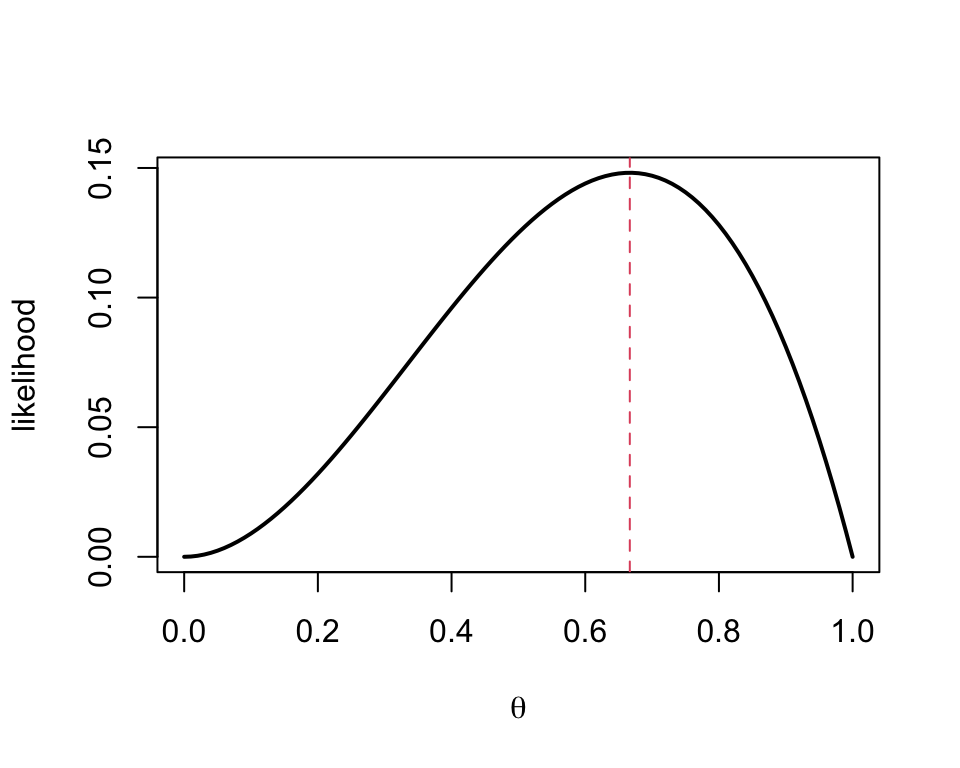
This chapter develops maximum likelihood estimation and the numerical methods used to find it, first for a scalar parameter and then for a parameter vector. The univariate case, where the log-likelihood can be plotted and a root can be bracketed, motivates the two ideas that carry over unchanged to higher dimensions: replacing the log-likelihood locally by a quadratic and solving for its maximum (Newton–Raphson), and using the curvature of that quadratic to report a standard error. The multivariate case, where neither plotting nor bracketing is available, shows what survives of that idea and what has to be added — safeguards against divergence, and a wider menu of derivative-free and gradient-only methods (Nelder–Mead, gradient descent, conjugate gradient, BFGS, and stochastic gradient descent) for when the Hessian is unavailable or too expensive. Several of these methods are illustrated below with live, in-browser animations that let you change the objective function, the starting point, and the algorithm before watching the iterates respond.
A model specifies the density or probability of the data \(D\) given a parameter \(\theta\), written \(f(D \mid \theta)\). As a function of \(D\) with \(\theta\) fixed it is the sampling distribution; as a function of \(\theta\) with \(D\) observed it is the likelihood. For independent observations \(x_1, \ldots, x_n\), \[ L(\theta) = \prod_{i=1}^{n} f(x_i \mid \theta), \qquad \ell(\theta) = \log L(\theta) = \sum_{i=1}^{n} \log f(x_i \mid \theta). \]
We always work with \(\ell\): the product underflows to zero for even moderate \(n\), and sums are easier to differentiate. The maximum likelihood estimator maximizes \(\ell\), and where \(\ell\) is smooth with an interior maximum, \(\hat\theta\) solves the score equation. \[ S(\theta) = \ell'(\theta) = 0, \qquad \ell''(\hat\theta) < 0 . \]
Three quantities recur throughout the chapter:
the score \(S(\theta) = \ell'(\theta)\), which locates the maximum;
the observed information \(J(\theta) = -\ell''(\theta)\), the curvature of the log-likelihood at \(\theta\);
the expected information \(n I(\theta) = -E_D\left[\ell''(\theta; D)\right]\), its expectation under the model.
The second derivative therefore plays a double role. It determines how a Newton-type algorithm steps toward the maximum, and it determines how precisely the data pin the parameter down. An optimizer that computes the curvature has computed the standard error at the same time.
Before turning to a model with a continuous parameter and an exactly quadratic log-likelihood, it is worth solving the score equation by hand in the simplest possible case. Let \(Y_1, \ldots, Y_n \overset{iid}{\sim} \mathrm{Bernoulli}(\theta)\), so that \(P(y_i \mid \theta) = \theta^{y_i}(1 - \theta)^{1 - y_i}\). Writing \(n_1 = \sum_i y_i\) for the number of successes and \(n_0 = n - n_1\) for the number of failures, \[ L(\theta) = \theta^{n_1}(1 - \theta)^{n_0}, \qquad \ell(\theta) = n_1 \log\theta + n_0 \log(1 - \theta). \]
The score is. \[ S(\theta) = \frac{n_1}{\theta} - \frac{n_0}{1 - \theta}, \] and setting \(S(\theta) = 0\) gives \(n_1(1-\theta) = n_0\theta\), i.e. \(n_1 = (n_1 + n_0)\theta = n\theta\), so \[ \hat\theta = \frac{n_1}{n} = \overline y. \]
The second derivative \(\ell''(\theta) = -n_1/\theta^{2} - n_0/(1-\theta)^{2}\) is negative wherever it is defined, confirming that \(\overline y\) is a maximum and not a saddle point. With only three observations, \(y = (1, 1, 0)\), the likelihood can even be tabulated and plotted directly, which makes the maximum at \(\hat\theta = 2/3 = \overline y\) visible without any calculus at all.
| \(\theta\) | \(P(1, 1, 0 \mid \theta) = \theta^{2}(1-\theta)\) |
|---|---|
| \(0\) | \(0\) |
| \(1/2\) | \(1/8 = 0.1250\) |
| \(2/3\) | \(4/27 = 0.1481\) (max) |
| \(3/4\) | \(9/64 = 0.1406\) |
| \(1\) | \(0\) |
curve(x^2 * (1 - x), 0, 1, lwd = 2, xlab = TeX(r"($\theta$)"), ylab = "likelihood")
abline(v = 2 / 3, col = 2, lty = 2)
Let \(X_1, \ldots, X_n\) be iid \(N(\mu, \sigma_0^{2})\) with \(\sigma_0^{2}\) known. Using the identity \(\sum_i (x_i - \mu)^2 = \sum_i (x_i - \overline x)^2 + n(\overline x - \mu)^2\), \[ \ell(\mu) = -\frac{n}{2}\log\left(2\pi\sigma_0^{2}\right) - \frac{1}{2\sigma_0^{2}}\sum_{i=1}^{n}(x_i - \mu)^{2} = C - \frac{n}{2\sigma_0^{2}}(\mu - \overline x)^{2} . \]
Differentiating, \[ S(\mu) = \frac{n}{\sigma_0^{2}}\left(\overline x - \mu\right), \qquad \ell''(\mu) = -\frac{n}{\sigma_0^{2}}, \qquad \hat\mu = \overline x . \]
Every feature of the general theory is visible here in exact form. The log-likelihood is a downward parabola, so it has a unique maximum. The score is linear, so the score equation is solved in one line. The curvature \(J(\mu) = n/\sigma_0^{2}\) does not depend on \(\mu\) or on the data, so observed and expected information coincide, \(J = nI\), and both grow linearly with \(n\): doubling the sample doubles the sharpness of the peak and halves the variance of \(\hat\mu\).
x20 <- rnorm(20, mean = 1); x50 <- rnorm(50, mean = 1)
mu <- seq(0, 2, length.out = 200)
ll_norm <- function(mu, x) vapply(mu, function(m) sum(dnorm(x, m, log = TRUE)), numeric(1))
par(mfrow = c(1, 3), mar = c(4, 4.5, 2.5, 1))
matplot(mu, cbind(ll_norm(mu, x20) - max(ll_norm(mu, x20)),
ll_norm(mu, x50) - max(ll_norm(mu, x50))),
type = "l", lty = 1, lwd = 2, col = c(1, 2),
xlab = TeX(r"($\mu$)"), ylab = TeX(r"($\ell(\mu) - \ell(\hat{\mu})$)"),
main = TeX(r"(log-likelihood)"))
legend("bottom", bty = "n", lty = 1, lwd = 2, col = c(1, 2),
legend = TeX(c(r"($n = 20$)", r"($n = 50$)")))
matplot(mu, cbind(20 * (mean(x20) - mu), 50 * (mean(x50) - mu)),
type = "l", lty = 1, lwd = 2, col = c(1, 2),
xlab = TeX(r"($\mu$)"), ylab = TeX(r"($S(\mu)$)"), main = TeX(r"(score)"))
abline(h = 0, lty = 3)
matplot(mu, cbind(rep(20, 200), rep(50, 200)), type = "l", lty = 1, lwd = 2, col = c(1, 2),
ylim = c(0, 60), xlab = TeX(r"($\mu$)"), ylab = TeX(r"($-\ell''(\mu)$)"),
main = TeX(r"(curvature)"))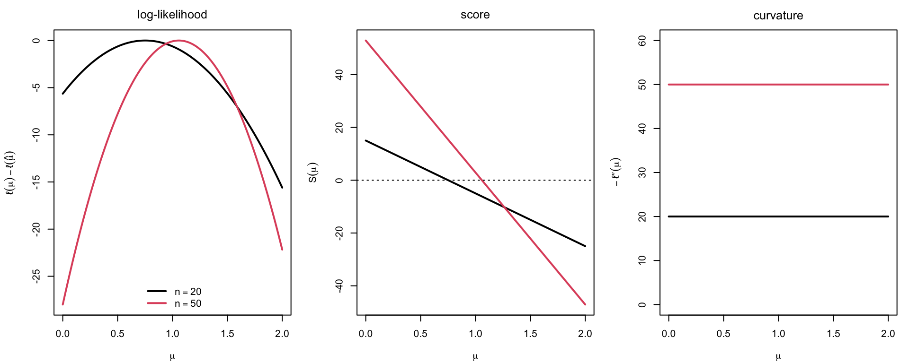
The score crosses zero exactly where \(\ell\) peaks, and the larger sample gives a more peaked log-likelihood, a steeper score, and a larger curvature.
Under regularity conditions — the support of \(f\) not depending on \(\theta\), the true value interior to the parameter space, and two derivatives passing under the integral sign — the MLE has three properties as \(n \to \infty\), with \(\theta_*\) the true parameter.
Consistency. \(\hat\theta \to \theta_*\) in probability. The reason is that \(\ell(\theta)/n\) converges to \(E_{\theta_*}[\log f(X \mid \theta)]\), which by the information inequality is maximized at \(\theta = \theta_*\): the log-likelihood surface converges to one whose peak is at the truth. #### Asymptotic normality. {-} \[ \hat\theta \;\dot\sim\; N\left(\theta_*,\ \left[n I(\theta_*)\right]^{-1}\right), \qquad I(\theta) = -E_X\left[\frac{\partial^{2}}{\partial\theta^{2}}\log f(X \mid \theta)\right] = E_X\left[\left(\frac{\partial}{\partial\theta}\log f(X\mid\theta)\right)^{2}\right]. \]
A sketch: expand \(S(\hat\theta) = 0\) about \(\theta_*\) to get \(\hat\theta - \theta_* \approx S(\theta_*)/\{-\ell''(\theta_*)\}\). The numerator is a sum of iid mean-zero terms, hence asymptotically normal with variance \(nI(\theta_*)\); the denominator converges to \(nI(\theta_*)\) by the law of large numbers. Dividing gives variance \([nI(\theta_*)]^{-1}\).
Asymptotic efficiency. No consistent estimator has smaller asymptotic variance — the Cramér–Rao bound is attained.
Since \(\theta_*\) is unknown, the variance is estimated by substituting \(\hat\theta\). Two versions are available: the expected information \(nI(\hat\theta)\), which requires the expectation analytically, and the observed information \(J(\hat\theta) = -\ell''(\hat\theta)\), which requires only the curvature that a Newton step already computes. By the law of large numbers \(J(\hat\theta)/n \approx I(\hat\theta)\), and both give \[ \widehat{\mathrm{SE}}(\hat\theta) = J(\hat\theta)^{-1/2} \quad\text{or}\quad \left[nI(\hat\theta)\right]^{-1/2}, \qquad \hat\theta \pm 1.96\,\widehat{\mathrm{SE}}(\hat\theta). \]
These are asymptotic statements. A flat log-likelihood — small curvature — gives a large standard error, and a log-likelihood that is far from quadratic gives a standard error that should not be trusted at all; the last section of this chapter shows a case of exactly that.
The Cauchy density \(f(x \mid \theta) = 1/\{\pi[1 + (x - \theta)^2]\}\) has no closed-form MLE: \[ \ell(\theta) = -n\log\pi - \sum_{i=1}^{n}\log\left(1 + (x_i - \theta)^{2}\right), \qquad S(\theta) = \sum_{i=1}^{n}\frac{2(x_i - \theta)}{1 + (x_i - \theta)^{2}} . \]
The score equation is a polynomial equation of degree \(2n - 1\). Plotting \(\ell\) for samples of increasing size shows the peak sharpening around the truth, which is consistency and growing information in one picture.
log_like_cauchy <- function(theta, x) sum(dcauchy(x, theta, log = TRUE))
thetas <- seq(15, 25, length.out = 200)
n_set <- c(50, 100, 200)
ll_cauchy <- sapply(n_set, function(n) {
d <- rcauchy(n, location = 20)
sapply(thetas, log_like_cauchy, x = d)
})
ll_cauchy <- sweep(ll_cauchy, 2, apply(ll_cauchy, 2, max)) # align peaks at 0
par(mar = c(4, 4.5, 2.5, 1))
matplot(thetas, ll_cauchy, type = "l", lty = 1, lwd = 2, col = c(1, 2, 4), ylim = c(-20, 0),
xlab = TeX(r"($\theta$)"), ylab = TeX(r"($\ell(\theta) - \ell(\hat{\theta})$)"),
main = TeX(r"(Cauchy log-likelihood, $\theta_* = 20$)"))
abline(v = 20, lty = 3)
legend("bottomright", bty = "n", lty = 1, lwd = 2, col = c(1, 2, 4),
legend = TeX(sprintf(r"($n = %d$)", n_set)))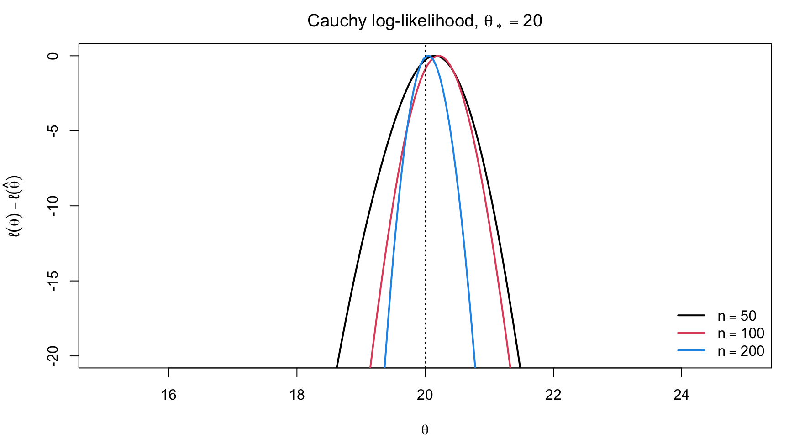
The variability of the MLE across repeated samples is the sampling distribution the theory describes. Repeating the experiment 50 times at two sample sizes shows the curves clustering more tightly, and their maxima concentrating, as \(n\) grows.
loglik_curves <- function(n, nrep = 50)
replicate(nrep, {
d <- rcauchy(n, location = 20)
lc <- sapply(thetas, log_like_cauchy, x = d)
lc - max(lc)
})
curves_small <- loglik_curves(20)
curves_large <- loglik_curves(200)
par(mfrow = c(1, 2), mar = c(4, 4.5, 2.5, 1))
for (obj in list(list(m = curves_small, n = 20), list(m = curves_large, n = 200)))
matplot(thetas, obj$m, type = "l", lty = 1, col = adjustcolor(1, 0.35), ylim = c(-10, 0),
xlab = TeX(r"($\theta$)"), ylab = TeX(r"($\ell(\theta) - \ell(\hat{\theta})$)"),
main = TeX(sprintf(r"(sample size $n = %d$)", obj$n)))
### sampling distribution of the MLE at the two sample sizes
mle_at <- function(m) thetas[apply(m, 2, which.max)]
rbind(`n = 20` = c(mean = mean(mle_at(curves_small)), sd = sd(mle_at(curves_small))),
`n = 200` = c(mean = mean(mle_at(curves_large)), sd = sd(mle_at(curves_large)))) mean sd
n = 20 20.05930 0.3843737
n = 200 20.01005 0.0920729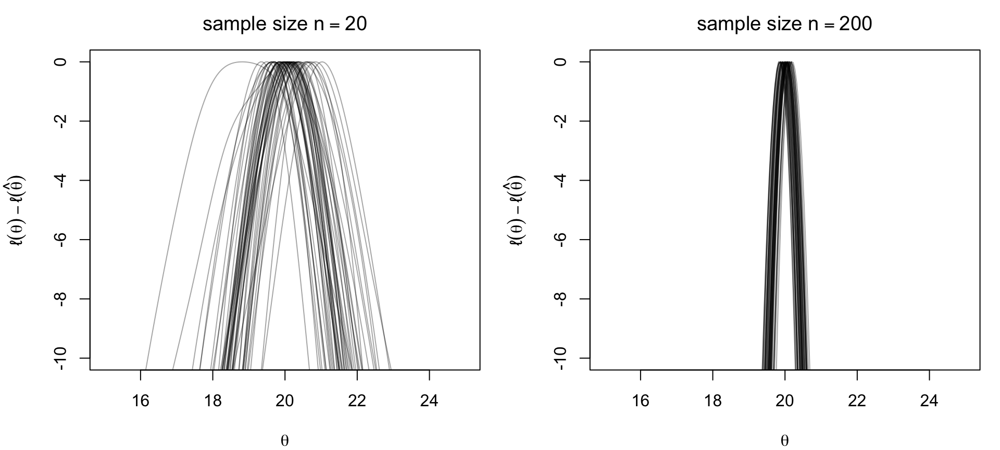
The standard deviation falls by roughly the factor \(\sqrt{10}\) predicted by \([nI(\theta_*)]^{-1/2}\). Two features of these curves also warn us about computation: for small \(n\) the log-likelihood has several local maxima, and its shape away from the peak is far from quadratic. Numerical optimization is required, and it must be used with care.
The same task can be posed three ways, and the algorithms below attack different versions of it:
maximize \(\ell(\theta)\);
minimize \(f(\theta) = -\ell(\theta)\);
find a root of \(S(\theta) = \ell'(\theta)\).
Root-finders are usually faster because they use derivative information, but they locate any stationary point, including minima and saddle points. Direct optimizers need only function values and always move toward a maximum, but converge more slowly. Which to prefer depends on whether derivatives are available and whether the function is smooth.
Each method below is illustrated with a schematic showing its first few iterations. To keep the pictures comparable they all use the same small problem: the per-observation log-likelihood of the zero-truncated Poisson model of the next section, with \(\overline x\) fixed at 1.8. The root of its score is marked in every figure.
xbar_d <- 1.8 # fixed sample mean
ll_d <- function(l) xbar_d * log(l) - l - log(1 - exp(-l)) # log-likelihood
S_d <- function(l) xbar_d / l - 1 / (1 - exp(-l)) # score
dS_d <- function(l) -xbar_d / l^2 + exp(-l) / (1 - exp(-l))^2 # its derivative
I_d <- function(l) 1 / (l * (1 - exp(-l))) - exp(-l) / (1 - exp(-l))^2 # information
g_d <- function(l) xbar_d * (1 - exp(-l)) # fixed-point map
lstar <- uniroot(S_d, c(0.2, 5))$root
c(root = lstar, contraction_factor = xbar_d * exp(-lstar)) root contraction_factor
1.318364 0.481631 Rearrange the score equation algebraically into the form \(\theta = g(\theta)\) and iterate \(\theta_{k+1} = g(\theta_k)\). If \(g\) maps an interval into itself and \(|g'(\theta^{*})| < 1\) at the fixed point, the mean value theorem gives \[ \lvert\theta_{k+1} - \theta^{*}\right vert = \left|g(\theta_k) - g(\theta^{*})\lvert \le \left vertg'(\xi)\lvert \left vert\theta_k - \theta^{*}\right| , \] so the error contracts by roughly the constant factor \(|g'(\theta^{*})|\) at each step. This is linear convergence: a fixed number of digits is gained per iteration, and the closer \(|g'|\) is to 1 the slower the progress.
fixed_point <- function(g, x0, tol = 1e-10, maxit = 500) {
for (k in 1:maxit) {
x1 <- g(x0)
if (abs(x1 - x0) < tol) return(c(root = x1, iter = k))
x0 <- x1
}
stop("not converged")
}The mechanism is easiest to see as a cobweb: from \(\lambda_k\) on the diagonal, move vertically to the curve \(g\) to obtain \(\lambda_{k+1}\), then horizontally back to the diagonal to start the next step. The iterates walk toward the intersection of \(g\) with the \(45^{\circ}\) line, and the shallower \(g\) is at that crossing — the smaller \(|g'|\) — the larger each stride toward it.
lam <- seq(0.2, 3, length.out = 300)
par(mar = c(4, 4.5, 2.5, 1))
plot(lam, g_d(lam), type = "l", lwd = 2, xlim = c(0.2, 3), ylim = c(0.2, 3),
xlab = TeX(r"($\lambda_k$)"), ylab = TeX(r"($g(\lambda_k) = \lambda_{k+1}$)"),
main = TeX(r"(fixed-point iteration: the cobweb)"))
abline(0, 1, lty = 2)
x0 <- 2.8
for (k in 1:5) {
x1 <- g_d(x0)
segments(x0, x0, x0, x1, col = 2, lwd = 2) # up or down to the curve
segments(x0, x1, x1, x1, col = 2, lwd = 2) # across to the diagonal
points(x0, x1, pch = 19, col = 2, cex = 0.7)
if (k <= 3) text(x0, 0.25, TeX(sprintf(r"($\lambda_%d$)", k - 1)), col = 2, cex = 0.9)
x0 <- x1
}
points(lstar, lstar, pch = 19, cex = 1.2)
text(lstar, lstar, TeX(r"($\hat{\lambda}$)"), pos = 4)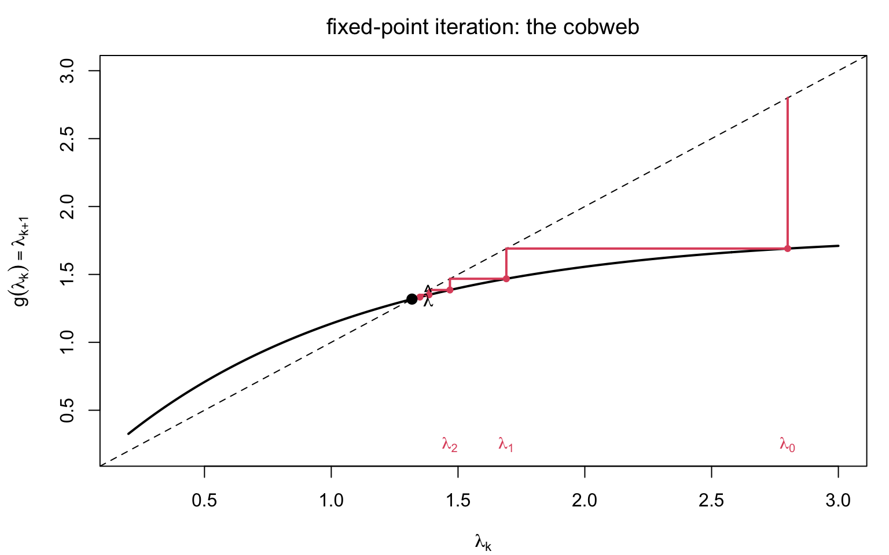
The method needs no derivatives, but the rearrangement must be found by hand, and different rearrangements of the same equation can converge at different speeds or diverge outright. Geometrically, a rearrangement with \(|g'| > 1\) at the crossing produces a cobweb that spirals outward instead of inward.
If \(S\) is continuous and \(S(a)\) and \(S(b)\) have opposite signs, a root lies in \([a, b]\). Evaluate \(S\) at the midpoint and retain whichever half still changes sign.
bisection <- function(S, a, b, tol = 1e-10) {
if (S(a) * S(b) > 0) stop("endpoints do not bracket a root")
k <- 0
while (b - a > tol) {
m <- (a + b) / 2
if (S(a) * S(m) <= 0) b <- m else a <- m
k <- k + 1
}
c(root = (a + b) / 2, iter = k)
}The schematic below draws the bracket at each iteration as a bar beneath the score curve. The dot is the midpoint, and the dotted line carries it up to the curve, where its sign decides which half survives.
par(mar = c(4, 4.5, 2.5, 1))
plot(lam, S_d(lam), type = "l", lwd = 2, ylim = c(-1.6, 3.5),
xlab = TeX(r"($\lambda$)"), ylab = TeX(r"($S(\lambda)$)"),
main = TeX(r"(bisection: each step halves the bracket)"))
abline(h = 0, lty = 3)
points(lstar, 0, pch = 19, cex = 1.2)
a <- 0.3; b <- 3
ylev <- seq(-0.5, -1.4, length.out = 4)
for (k in 1:4) {
m <- (a + b) / 2
segments(a, ylev[k], b, ylev[k], col = 4, lwd = 3)
points(c(a, b), rep(ylev[k], 2), pch = "|", col = 4)
segments(m, ylev[k], m, S_d(m), lty = 3, col = 2)
points(m, ylev[k], pch = 19, col = 2, cex = 0.8)
text(0.25, ylev[k], k, cex = 0.8, col = 4)
if (S_d(a) * S_d(m) <= 0) b <- m else a <- m
}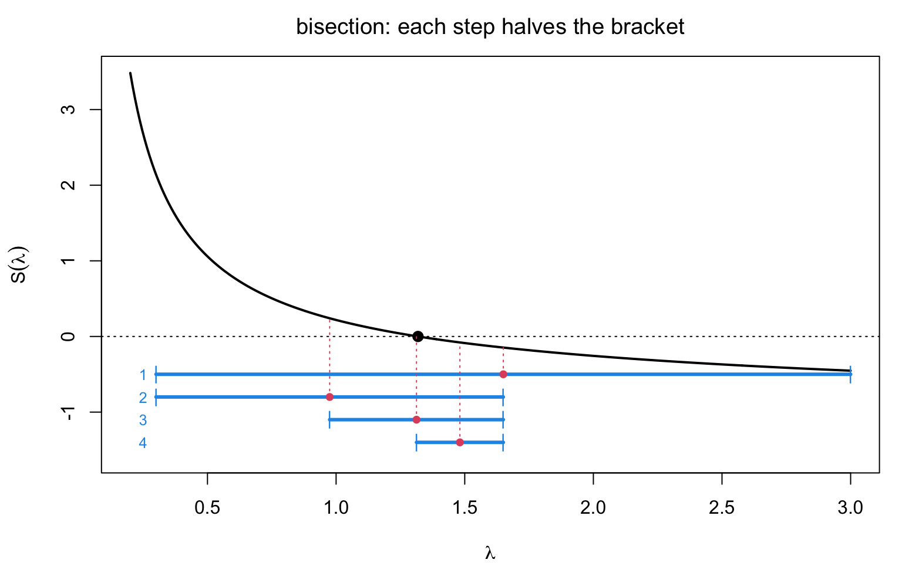
The bracket halves at every step, so after \(k\) iterations the error is at most \((b - a)/2^{k}\) and the iteration count is known in advance: about \(\log_2\{(b-a)/\text{tol}\}\), regardless of the shape of \(S\). Bisection cannot diverge, which makes it the natural fallback when a faster method misbehaves. R’s uniroot uses Brent’s method, which retains the bracketing guarantee while interpolating for speed.
Approximate the score by its tangent line at \(\theta_k\) and solve for where the tangent crosses zero: \[ S(\theta) \approx S(\theta_k) + S'(\theta_k)(\theta - \theta_k) = 0 \implies \theta_{k+1} = \theta_k - \frac{S(\theta_k)}{S'(\theta_k)} = \theta_k - \frac{\ell'(\theta_k)}{\ell''(\theta_k)} . \]
Equivalently, replace \(\ell\) by its second-order Taylor expansion at \(\theta_k\) and jump to the maximum of that parabola. For an exactly quadratic \(\ell(\theta) = -a(\theta - u)^2 + C\) with \(a > 0\) we have \(\ell' = -2a(\theta - u)\) and \(\ell'' = -2a\), so \[ \theta_{k+1} = \theta_k - \frac{-2a(\theta_k - u)}{-2a} = u, \] in one step from any starting value. The normal-mean example of the previous section is exactly of this form: Newton converges immediately.
The left panel below traces three steps. At each iterate, the tangent to the score is followed down to the horizontal axis, and where it lands is the next iterate. As the curve straightens near the root, the tangent becomes an excellent approximation and the steps land almost exactly on the answer.
The right panel contrasts one Newton step with one step of the method of scoring from the same point. Newton uses the actual slope \(S'(\lambda_k)\); scoring uses \(-nI(\lambda_k)\), the slope averaged over hypothetical datasets. The two lines differ away from the root and coincide as \(\lambda_k\) approaches it.
par(mfrow = c(1, 2), mar = c(4, 4.5, 2.5, 1))
### three Newton steps
plot(lam, S_d(lam), type = "l", lwd = 2, ylim = c(-1, 3.5),
xlab = TeX(r"($\lambda$)"), ylab = TeX(r"($S(\lambda)$)"),
main = TeX(r"(Newton-Raphson: follow the tangent)"))
abline(h = 0, lty = 3)
points(lstar, 0, pch = 19, cex = 1.2)
x0 <- 0.45
for (k in 1:3) {
x1 <- x0 - S_d(x0) / dS_d(x0)
segments(x0, S_d(x0), x1, 0, col = 2, lwd = 2)
segments(x1, 0, x1, S_d(x1), lty = 3, col = "grey40")
points(c(x0, x1), c(S_d(x0), 0), pch = 19, col = 2, cex = 0.7)
text(x0, S_d(x0), TeX(sprintf(r"($\lambda_%d$)", k - 1)), pos = 3, col = 2, cex = 0.9)
x0 <- x1
}
## Newton step versus scoring step from the same point
plot(lam, S_d(lam), type = "l", lwd = 2, ylim = c(-1, 3.5),
xlab = TeX(r"($\lambda$)"), ylab = TeX(r"($S(\lambda)$)"),
main = TeX(r"(observed versus expected curvature)"))
abline(h = 0, lty = 3)
points(lstar, 0, pch = 19, cex = 1.2)
x0 <- 0.45
x_nr <- x0 - S_d(x0) / dS_d(x0) # slope S'(lambda)
x_fs <- x0 + S_d(x0) / I_d(x0) # slope -nI(lambda)
segments(x0, S_d(x0), x_nr, 0, col = 2, lwd = 2)
segments(x0, S_d(x0), x_fs, 0, col = 4, lwd = 2, lty = 5)
points(c(x0, x_nr, x_fs), c(S_d(x0), 0, 0), pch = 19, cex = 0.7, col = c(1, 2, 4))
legend("topright", bty = "n", lwd = 2, lty = c(1, 5), col = c(2, 4),
legend = TeX(c(r"(Newton: slope $S'(\lambda_k)$)", r"(scoring: slope $-nI(\lambda_k)$)")))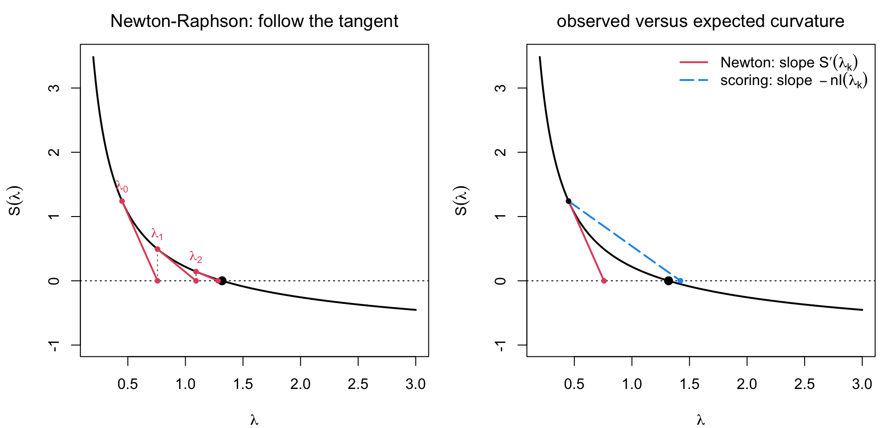
Let \(e_k = \theta_k - \hat\theta\) and expand \(S(\hat\theta) = 0\) about \(\theta_k\): \[ 0 = S(\theta_k) - S'(\theta_k)e_k + \tfrac12 S''(\xi)e_k^{2} \implies e_{k+1} = e_k - \frac{S(\theta_k)}{S'(\theta_k)} = \frac{S''(\xi)}{2S'(\theta_k)}\,e_k^{2} . \]
The error is squared at each step, so the number of correct digits roughly doubles. Two conditions appear in the constant: \(S'(\hat\theta) \ne 0\), meaning the maximum is a genuine peak and not a flat spot, and \(S''\) bounded near the root. Asymptotic normality says that log-likelihoods are approximately quadratic near the MLE, which is why Newton is so effective there.
newton <- function(S, dS, x0, tol = 1e-10, maxit = 100, trace = FALSE) {
for (k in 1:maxit) {
x1 <- x0 - S(x0) / dS(x0)
if (trace) cat(sprintf("iter %2d: %.10f\n", k, x1))
if (!is.finite(x1)) stop("diverged")
if (abs(x1 - x0) < tol) return(c(root = x1, iter = k))
x0 <- x1
}
stop("not converged")
}Derivation. To find \(\sqrt{a}\), take \(f(x) = x^2 - a\), whose positive root is \(\sqrt a\). Then \(f'(x) = 2x\), and the Newton step is, \[ x_{k+1} = x_k - \frac{f(x_k)}{f'(x_k)} = x_k - \frac{x_k^{2} - a}{2x_k} = \frac{1}{2}\left(x_k + \frac{a}{x_k}\right). \]
The final form is the Babylonian rule: if \(x_k\) is too small then \(a/x_k\) is too large, and the root lies between them, so average the pair. Newton’s tangent line lands exactly on the midpoint.
The error follows the general quadratic law. Writing \(e_k = x_k - \sqrt a\), \[ e_{k+1} = \frac{1}{2}\left(x_k + \frac{a}{x_k}\right) - \sqrt a = \frac{\left(x_k - \sqrt a\right)^{2}}{2x_k} = \frac{e_k^{2}}{2x_k}, \]
so the number of correct digits roughly doubles each step.
babylonian <- function(a, x0 = 1, iters = 6)
Reduce(function(x, k) (x + a / x) / 2, 1:iters, init = x0, accumulate = TRUE)
traces <- sapply(c(10, 20, 50), babylonian)
dimnames(traces) <- list(paste("iter", 0:6), sprintf("sqrt(%d)", c(10, 20, 50)))
print(traces, digits = 12) sqrt(10) sqrt(20) sqrt(50)
iter 0 1.00000000000 1.00000000000 1.00000000000
iter 1 5.50000000000 10.50000000000 25.50000000000
iter 2 3.65909090909 6.20238095238 13.73039215686
iter 3 3.19600508187 4.71347454529 8.68597437190
iter 4 3.16245562280 4.47831444547 7.22119047433
iter 5 3.16227766518 4.47214021707 7.07262827574
iter 6 3.16227766017 4.47213595500 7.07106798401sqrt(c(10, 20, 50)) # for comparison[1] 3.162278 4.472136 7.071068signif(abs(traces - rep(sqrt(c(10, 20, 50)), each = 7)), 3) # errors sqrt(10) sqrt(20) sqrt(50)
iter 0 2.16e+00 3.47e+00 6.07e+00
iter 1 2.34e+00 6.03e+00 1.84e+01
iter 2 4.97e-01 1.73e+00 6.66e+00
iter 3 3.37e-02 2.41e-01 1.61e+00
iter 4 1.78e-04 6.18e-03 1.50e-01
iter 5 5.01e-09 4.26e-06 1.56e-03
iter 6 4.44e-16 2.03e-12 1.72e-07Starting from \(x_0 = 1\) in every case, the first two steps do the coarse work — the larger \(a\) is, the further the opening leap — and from the third step on the error squares: roughly \(10^{-1}\), then \(10^{-3}\), then \(10^{-6}\), then machine precision. Six iterations suffice for all three, though \(\sqrt{50}\) spends one more step than \(\sqrt{10}\) recovering from the poor start.
Newton uses only local information, so the quadratic model can be badly wrong away from the maximum. Three failures occur:
wrong curvature — where \(\ell'' > 0\) the model is a bowl, and the step heads toward a minimum or off to infinity;
overshooting — where the score is nearly flat, \(S'(\theta_k) \approx 0\) produces an enormous step, possibly outside the parameter space;
multiple roots — the iteration converges to whichever stationary point it happens to reach, which need not be the global maximum.
The single-observation Cauchy likelihood is the standard illustration. With one observation at zero, \(f(\theta) = -\ell(\theta) = \log(1 + \theta^{2})\) and \(s(\theta) = f'(\theta) = 2\theta/(1 + \theta^{2})\), whose only root is \(\theta = 0\). The score rises, turns over at \(\theta = 1\), and decays to zero in the tails — exactly the flat region that defeats Newton.
lik <- function(t) log(1 + t^2) # negative log-likelihood
s <- function(t) 2 * t / (1 + t^2) # its derivative
ds <- function(t) 2 * (1 - t^2) / (1 + t^2)^2
par(mfrow = c(1, 2), mar = c(4, 4.5, 2.5, 1))
curve(lik, -5, 5, n = 400, lwd = 2, xlab = TeX(r"($\theta$)"), ylab = TeX(r"($-\ell(\theta)$)"),
main = TeX(r"(negative log-likelihood)"))
curve(s, -5, 5, n = 400, lwd = 2, xlab = TeX(r"($\theta$)"), ylab = TeX(r"($s(\theta)$)"),
main = TeX(r"(derivative, with the flat tails)"))
abline(h = 0, lty = 3); abline(v = c(-1, 1), col = 2, lty = 2)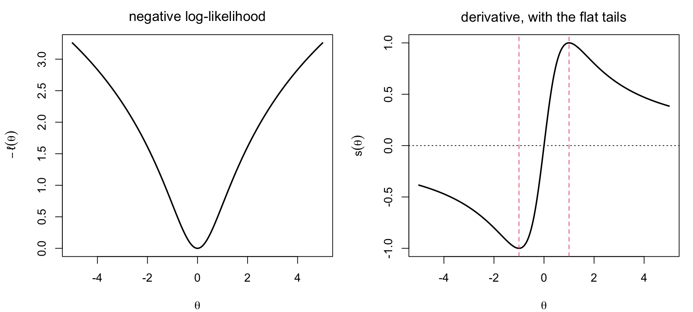
Tracing the iterates from three starting values shows the boundary at \(\lvert\theta_0 vert = 1\), where the derivative \(s\) turns over:
newton_trace <- function(s, ds, x0, iters = 8) {
path <- numeric(iters + 1); path[1] <- x0
for (k in 1:iters) {
x0 <- x0 - s(x0) / ds(x0)
path[k + 1] <- if (is.finite(x0)) x0 else NA
}
path
}
starts <- c(0.5, 0.8, 1.2)
traces <- vapply(starts, function(v) newton_trace(s, ds, v), numeric(9))
colnames(traces) <- sprintf("start = %.1f", starts)
rownames(traces) <- paste("iter", 0:8)
signif(traces, 5) start = 0.5 start = 0.8 start = 1.2
iter 0 5.0000e-01 0.8000 1.2000
iter 1 -3.3333e-01 -2.8444 7.8545
iter 2 8.3333e-02 -6.4912 15.9680
iter 3 -1.1655e-03 -13.2980 32.0620
iter 4 3.1664e-09 -26.7470 64.1860
iter 5 0.0000e+00 -53.5690 128.4000
iter 6 0.0000e+00 -107.1800 256.8200
iter 7 0.0000e+00 -214.3700 513.6500
iter 8 0.0000e+00 -428.7500 1027.3000From \(\theta_0 = 0.5\), inside the region where the quadratic model is adequate, Newton converges quadratically to zero. From \(\theta_0 = 0.8\) the first step already overshoots into the tail, and from \(\theta_0 = 1.2\) — beyond the inflection point of \(s\) — the iterates run away, each step landing further out where the derivative is flatter still.
## Interactive versions of the same three trajectories (requires the animation
## package and a graphics device that can write animations)
library(animation)
ani.options(interval = 1, nmax = 50)
newton.method(FUN = s, init = 0.5, rg = c(-1.5, 1.5))
newton.method(FUN = s, init = 0.8, rg = c(-8, 1.5))
newton.method(FUN = s, init = 1.2, rg = c(-2, 20))Newton’s step divides by the observed curvature \(S'(\theta_k) = \ell''(\theta_k)\), computed from the data at hand, which can be positive — or nearly zero — far from the maximum. Replacing it by the expected curvature \(-nI(\theta_k)\) gives the method of scoring: \[ \theta_{k+1} = \theta_k + \frac{S(\theta_k)}{nI(\theta_k)}. \]
Because \(nI(\theta) > 0\) for every \(\theta\) by construction, the denominator never changes sign: every step of scoring is an ascent step, even at a point where Newton’s step would point downhill or blow up. Near the maximum \(nI(\hat\theta) \approx -\ell''(\hat\theta)\), so scoring and Newton coincide and both converge quickly; the two methods differ only in how they behave away from the root.
fisher_scoring <- function(S, nI, x0, tol = 1e-10, maxit = 100) {
for (k in 1:maxit) {
x1 <- x0 + S(x0) / nI(x0)
if (abs(x1 - x0) < tol) return(c(root = x1, iter = k))
x0 <- x1
}
stop("not converged")
}
## a poor start: at lambda = 3.5 the truncated-Poisson score is nearly flat
c(newton_step_from_3.5 = 3.5 - S_d(3.5) / dS_d(3.5)) # overshoots to an infeasible negative lambdanewton_step_from_3.5
-1.000957 rbind(newton = tryCatch(newton(S_d, dS_d, 3.5), error = function(e) c(root = NA, iter = NA)),
scoring = fisher_scoring(S_d, I_d, 3.5)) root iter
newton NA NA
scoring 1.318374 5From this poor start, Newton’s step lands on a negative — and hence infeasible — value of \(\lambda\) and never recovers, while scoring’s positive-definite denominator lands its very first step near \(\lambda \approx 1.53\), already close to the root, and converges normally from there. The price of that safety is that \(nI(\theta)\) must be available in closed form; where it is not, Newton with the safeguards below is the fallback.
Three remedies cover most cases. Start from a robust estimate — the sample median for a location model. Apply step halving: accept the full Newton step only if it improves the log-likelihood, otherwise halve it until it does. Or replace the observed curvature by the expected information, giving the method of scoring, \[ \theta_{k+1} = \theta_k + \frac{S(\theta_k)}{n I(\theta_k)} , \] in which the divisor is positive by construction, so every step ascends. Near the MLE \(nI(\hat\theta) \approx -\ell''(\hat\theta)\), so scoring inherits Newton’s speed while being far more stable away from the optimum. Its cost is that the expectation must be available in closed form.
safe_newton <- function(ll, S, dS, x0, lower = -Inf, upper = Inf,
tol = 1e-10, maxit = 100, max_halve = 40) {
f0 <- ll(x0)
for (k in 1:maxit) {
step <- -S(x0) / dS(x0)
if (dS(x0) > 0) step <- sign(S(x0)) # wrong curvature: just move uphill
for (h in 0:max_halve) { # halve until feasible and improving
x1 <- x0 + step / 2^h
if (x1 > lower && x1 < upper && is.finite(ll(x1)) && ll(x1) >= f0) break
}
if (abs(x1 - x0) < tol) return(c(root = x1, iter = k, halvings = h))
x0 <- x1; f0 <- ll(x1)
}
stop("not converged")
}Golden section minimizes \(f = -\ell\) directly, using no derivative at all, which makes it the method of choice when \(\ell\) is not differentiable or its derivative is unreliable. Keep a bracket \([x_l, x_u]\) containing the minimum of a unimodal \(f\), with two interior points placed at the golden ratio \(g = (3 - \sqrt5)/2 \approx 0.382\) of the way in from each end. Comparing the two interior values discards one end, and the ratio is chosen precisely so that the surviving interior point is correctly positioned for the next iteration: one new evaluation per step, with the bracket shrinking by the factor \(0.618\).
golden <- function(f, brack.int, eps = 1e-4, ...) {
g <- (3 - sqrt(5)) / 2
xl <- min(brack.int); xu <- max(brack.int)
tmp <- g * (xu - xl)
xmu <- xu - tmp; xml <- xl + tmp
fl <- f(xml, ...); fu <- f(xmu, ...)
while (abs(xu - xl) > (1e-5 + abs(xl)) * eps) {
if (fl < fu) {
xu <- xmu; xmu <- xml; fu <- fl
xml <- xl + g * (xu - xl); fl <- f(xml, ...)
} else {
xl <- xml; xml <- xmu; fl <- fu
xmu <- xu - g * (xu - xl); fu <- f(xmu, ...)
}
}
if (fl < fu) xml else xmu
}The schematic makes the reuse visible. Each bar is the current bracket with its two interior points; the point that survives into the next iteration is drawn in blue and sits at exactly the right position there, so only the red point has to be evaluated afresh.
f_d <- function(l) -ll_d(l)
gr <- (3 - sqrt(5)) / 2
par(mar = c(4, 4.5, 2.5, 1))
plot(lam, f_d(lam), type = "l", lwd = 2, ylim = c(0.2, 1.25),
xlab = TeX(r"($\lambda$)"), ylab = TeX(r"($-\ell(\lambda)$)"),
main = TeX(r"(golden section: one new evaluation per step)"))
points(lstar, f_d(lstar), pch = 19, cex = 1.2)
xl <- 0.3; xu <- 3
ylev <- seq(0.44, 0.24, length.out = 3)
for (k in 1:3) {
xml <- xl + gr * (xu - xl); xmu <- xu - gr * (xu - xl)
segments(xl, ylev[k], xu, ylev[k], col = 4, lwd = 3)
points(c(xl, xu), rep(ylev[k], 2), pch = "|", col = 4)
keep_lower <- f_d(xml) < f_d(xmu)
points(xml, ylev[k], pch = 19, cex = 0.9, col = if (keep_lower) 4 else 2)
points(xmu, ylev[k], pch = 19, cex = 0.9, col = if (keep_lower) 2 else 4)
text(0.25, ylev[k], k, cex = 0.8, col = 4)
if (keep_lower) xu <- xmu else xl <- xml
}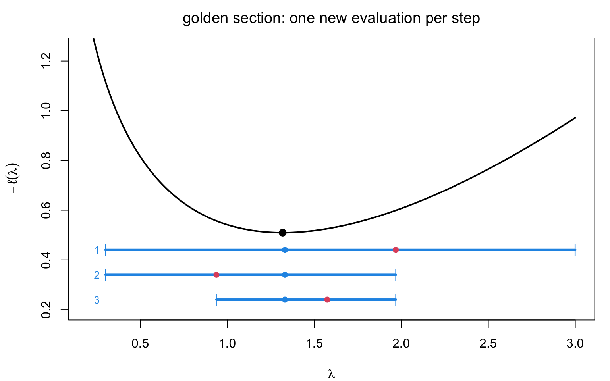
The first test is the negative log-likelihood of the classical genetic linkage model, with cell counts \((1997, 906, 904, 32)\) and probabilities \(\left((2+\theta)/4, (1-\theta)/4, (1-\theta)/4, \theta/4\right)\); it is smooth, so any method would work. The second, \(f(x) = |x - 10|\), is not differentiable at its minimum, so no root-finder applies — golden section handles it without modification.
f1 <- function(theta) -1997 * log(2 + theta) - 1810 * log(1 - theta) - 32 * log(theta)
f2 <- function(x) abs(x - 10)
par(mfrow = c(1, 2), mar = c(4, 4.5, 2.5, 1))
curve(f1, 0.001, 0.999, n = 400, lwd = 2, xlab = TeX(r"($\theta$)"), ylab = TeX(r"($-\ell(\theta)$)"),
main = TeX(r"(genetic linkage model)"))
abline(v = golden(f1, c(0.001, 0.999)), col = 2, lty = 2, lwd = 2)
curve(f2, 0, 20, n = 400, lwd = 2, xlab = TeX(r"($x$)"), ylab = TeX(r"($|x - 10|$)"),
main = TeX(r"(not differentiable at the minimum)"))
abline(v = golden(f2, c(0, 20)), col = 2, lty = 2, lwd = 2)
c(linkage = golden(f1, c(0.001, 0.999)), abs_value = golden(f2, c(0, 20))) linkage abs_value
0.03571247 10.00009645 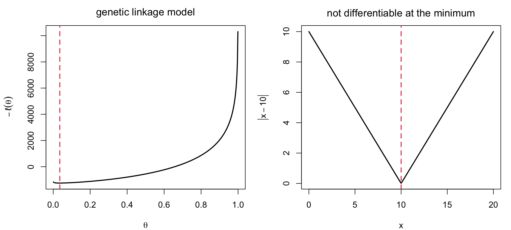
When \(S\) or \(S'\) is tedious or error-prone to derive by hand, both can be approximated by finite differences: \[ \ell'(\theta) \approx \frac{\ell(\theta + h) - \ell(\theta - h)}{2h}, \qquad \ell''(\theta) \approx \frac{\ell(\theta + h) - 2\ell(\theta) + \ell(\theta - h)}{h^{2}}. \]
The step \(h\) trades off two sources of error: too large and the approximation suffers truncation error from the curvature of \(\ell\) itself; too small and it suffers rounding error, because the numerator subtracts two nearly equal floating-point numbers. A step of \(h \approx \sqrt{\varepsilon}\,(1 + \lvert\theta vert) \approx 10^{-8}\) balances the two for the first derivative, and \(h \approx \varepsilon^{1/3}\) for the second, where \(\varepsilon \approx 2 \times 10^{-16}\) is double-precision machine epsilon.
h <- 1e-5
c(analytic = dS_d(lstar), numeric = (ll_d(lstar + h) - 2 * ll_d(lstar) + ll_d(lstar - h)) / h^2) analytic numeric
-0.5368394 -0.5368372 The two agree to several digits, which is reassuring but also the point: nlm() and optim(method = "BFGS") fall back on exactly this kind of finite differencing whenever an analytic gradient is not supplied, and numDeriv::grad() / numDeriv::hessian() implement more accurate variants (Richardson extrapolation) for when a single finite difference is not precise enough.
| method | needs | convergence | fails when |
|---|---|---|---|
| fixed point | a rearrangement \(\theta = g(\theta)\) | linear, factor \(\lvert g'\rvert\) | \(\lvert g'\rvert \ge 1\) |
| bisection | \(S\) and a sign-changing bracket | linear, factor \(1/2\) | no bracket available |
| Newton–Raphson | \(S\) and \(S'\) | quadratic near the root | flat or wrong curvature |
| method of scoring | \(S\) and \(I(\theta)\) | linear to quadratic | \(E[\cdot]\) unavailable |
| golden section | \(\ell\) only, and a bracket | linear, factor \(0.618\) | \(\ell\) not unimodal |
Counts are often recorded only when positive: a study of hospital stays sees admitted patients, a survey of litters sees litters that exist. If \(Y \sim \mathrm{Poisson}(\lambda)\) and we observe \(X = Y \mid Y > 0\), \[ P(x \mid \lambda) = \frac{e^{-\lambda}\lambda^{x}}{x!}\cdot\frac{1}{1 - e^{-\lambda}}, \qquad x = 1, 2, \ldots. \]
Dropping the factorial terms, which do not involve \(\lambda\), \[ \ell(\lambda) = \left(\sum_i x_i\right)\log\lambda - n\left[\lambda + \log\left(1 - e^{-\lambda}\right)\right], \] \[ S(\lambda) = \frac{\sum_i x_i}{\lambda} - \frac{n}{1 - e^{-\lambda}}, \qquad S'(\lambda) = -\frac{\sum_i x_i}{\lambda^{2}} + \frac{n e^{-\lambda}}{\left(1 - e^{-\lambda}\right)^{2}} . \]
Since \(E(X) = \lambda/(1 - e^{-\lambda})\), taking \(-E[S'(\lambda)]\) gives the expected information, \[ n I(\lambda) = \frac{n}{\lambda\left(1 - e^{-\lambda}\right)} - \frac{n e^{-\lambda}}{\left(1 - e^{-\lambda}\right)^{2}} . \]
The score equation has no closed-form root, but the likelihood is unimodal — an ideal problem on which to compare all the methods against a single known answer.
## log likelihood, omitting factorial terms; vectorized in lambda
nzp.log.likelihood <- function(n, lambda)
sum(n) * log(lambda) - length(n) * (lambda + log(1 - exp(-lambda)))
nzp.scorefunction <- function(n, lambda)
sum(n) / lambda - length(n) / (1 - exp(-lambda))
nzp.dscore <- function(n, lambda)
-sum(n) / lambda^2 + length(n) * exp(-lambda) / (1 - exp(-lambda))^2
nzp.information <- function(n, lambda)
length(n) / (lambda * (1 - exp(-lambda))) - length(n) * exp(-lambda) / (1 - exp(-lambda))^2
## simulated data: Poisson counts with the zeros discarded
x <- rpois(100, lambda = 1.5)
xp <- x[x > 0]
c(n_observed = length(xp), sample_mean = mean(xp), true_lambda = 1.5) n_observed sample_mean true_lambda
83.000000 2.084337 1.500000 The sample mean overshoots 1.5, because the zeros that would have pulled it down were never recorded.
lambdas <- seq(0.1, 8, length.out = 300)
par(mfrow = c(1, 2), mar = c(4, 4.5, 2.5, 1))
plot(lambdas, nzp.log.likelihood(xp, lambdas), type = "l", lwd = 2,
xlab = TeX(r"($\lambda$)"), ylab = TeX(r"($\ell(\lambda)$)"), main = TeX(r"(log-likelihood)"))
plot(lambdas, nzp.scorefunction(xp, lambdas), type = "l", lwd = 2,
xlab = TeX(r"($\lambda$)"), ylab = TeX(r"($S(\lambda)$)"), main = TeX(r"(score)"))
abline(h = 0, lty = 3)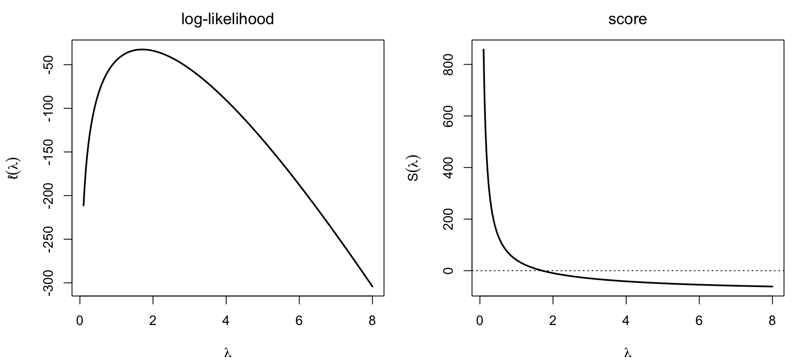
Each method below returns the whole sequence of iterates together with the log-likelihood attained, so the trajectories can be compared directly.
Simple iteration rearranges \(S(\lambda) = 0\) as \[ \frac{\overline x}{\lambda} = \frac{1}{1 - e^{-\lambda}} \iff \lambda = \overline x\left(1 - e^{-\lambda}\right) = g(\lambda), \] with contraction factor \(g'(\lambda) = \overline x e^{-\lambda}\).
nzp.simple.iteration <- function(n, r, lambda0 = mean(n)) {
mean.n <- mean(n); lambda <- numeric(r + 1); lambda[1] <- lambda0
for (i in 1:r) lambda[i + 1] <- mean.n * (1 - exp(-lambda[i]))
data.frame(lambda = lambda, log.lik = nzp.log.likelihood(n, lambda))
}
nzp.newton.raphson <- function(n, r, lambda0 = mean(n)) {
mean.n <- mean(n); lambda <- numeric(r + 1); lambda[1] <- lambda0
for (i in 1:r) {
e <- exp(-lambda[i])
lambda[i + 1] <- lambda[i] -
(mean.n / lambda[i] - 1 / (1 - e)) / (e / (1 - e)^2 - mean.n / lambda[i]^2)
}
data.frame(lambda = lambda, log.lik = nzp.log.likelihood(n, lambda))
}
nzp.method.of.scoring <- function(n, r, lambda0 = mean(n)) {
mean.n <- mean(n); lambda <- numeric(r + 1); lambda[1] <- lambda0
for (i in 1:r) {
e <- exp(-lambda[i])
lambda[i + 1] <- lambda[i] -
(mean.n / lambda[i] - 1 / (1 - e)) / ((e / (1 - e) - 1 / lambda[i]) / (1 - e))
}
data.frame(lambda = lambda, log.lik = nzp.log.likelihood(n, lambda))
}The three methods are run for 15 iterations from a sensible start, a start far below, and a start far above.
starts <- c(mean(xp), 0.1, 100)
trace_tab <- function(fun, r = 15)
vapply(starts, function(s) fun(xp, r, s)$lambda, numeric(r + 1))
paths <- list(simple = trace_tab(nzp.simple.iteration),
newton = trace_tab(nzp.newton.raphson),
scoring = trace_tab(nzp.method.of.scoring))Warning in log(lambda): NaNs producedWarning in log(1 - exp(-lambda)): NaNs produced### first six iterates from each starting value
for (m in names(paths)) {
cat("\n", m, "\n")
tab <- paths[[m]][1:6, ]
dimnames(tab) <- list(paste("iter", 0:5), sprintf("start = %.4g", starts))
print(signif(tab, 6))
}
simple
start = 2.084 start = 0.1 start = 100
iter 0 2.08434 0.100000 100.00000
iter 1 1.82507 0.198351 2.08434
iter 2 1.74833 0.375010 1.82507
iter 3 1.72153 0.651809 1.74833
iter 4 1.71167 0.998184 1.72153
iter 5 1.70798 1.316160 1.71167
newton
start = 2.084 start = 0.1 start = 100
iter 0 2.08434 0.100000 100.00
iter 1 1.63694 0.195239 -4597.69
iter 2 1.70334 0.371813 NaN
iter 3 1.70574 0.672763 NaN
iter 4 1.70574 1.099100 NaN
iter 5 1.70574 1.505560 NaN
scoring
start = 2.084 start = 0.1 start = 100
iter 0 2.08434 0.10000 100.00000
iter 1 1.71600 2.10035 2.08434
iter 2 1.70575 1.71682 1.71600
iter 3 1.70574 1.70575 1.70575
iter 4 1.70574 1.70574 1.70574
iter 5 1.70574 1.70574 1.70574The pattern is the one the theory predicts. Newton–Raphson takes the fewest iterations from a good start, and its digits lock in from the left as the error is squared each step. Simple iteration converges from every start, including the extreme ones, but slowly and at a steady rate. The method of scoring is intermediate: always ascending, and nearly as fast as Newton once close.
lhat <- nzp.newton.raphson(xp, 30, mean(xp))$lambda[31]
err <- sapply(paths, function(p) abs(p[, 1] - lhat)) # from the mean(xp) start
par(mar = c(4, 4.5, 2.5, 1))
matplot(0:15, pmax(err, 1e-17), log = "y", type = "b", pch = 19, lty = 1, col = c(4, 1, 2),
xlab = TeX(r"(iteration $k$)"), ylab = TeX(r"($|\lambda_k - \hat{\lambda}|$)"),
main = TeX(r"(error decay from $\lambda_0 = \bar{x}$)"))
legend("bottomleft", bty = "n", pch = 19, lty = 1, col = c(4, 1, 2),
legend = c("simple iteration", "Newton-Raphson", "method of scoring"))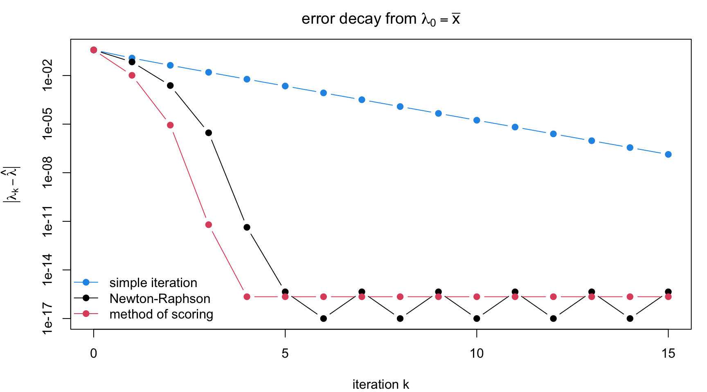
On a log scale a linear method is a straight line; Newton’s curve bends downward until it reaches the floor set by machine precision.
S_xp <- function(l) nzp.scorefunction(xp, l)
dS_xp <- function(l) nzp.dscore(xp, l)
ll_xp <- function(l) nzp.log.likelihood(xp, l)
c(newton = unname(newton(S_xp, dS_xp, mean(xp))["root"]),
fixed_point = unname(fixed_point(function(l) mean(xp) * (1 - exp(-l)), mean(xp))["root"]),
bisection = unname(bisection(S_xp, 0.1, 20)["root"]),
golden = golden(function(l) -ll_xp(l), c(0.1, 20), eps = 1e-8),
uniroot = uniroot(S_xp, c(0.1, 20), tol = 1e-10)$root,
optimize = optimize(function(l) -ll_xp(l), c(0.1, 20), tol = 1e-10)$minimum) newton fixed_point bisection golden uniroot optimize
1.705744 1.705744 1.705744 1.705744 1.705744 1.705744 All six agree, which is the point of running them together: the methods differ in cost and robustness, not in the answer.
The optimizer has already produced everything inference needs.
se_obs <- 1 / sqrt(-nzp.dscore(xp, lhat))
se_exp <- 1 / sqrt(nzp.information(xp, lhat))
c(mle = lhat, se_observed = se_obs, se_expected = se_exp) mle se_observed se_expected
1.705744 0.164514 0.164514 lhat + c(-1.96, 1.96) * se_obs # 95% Wald interval[1] 1.383297 2.028192lam <- seq(lhat - 4 * se_obs, lhat + 4 * se_obs, length.out = 300)
quad <- -0.5 * (-nzp.dscore(xp, lhat)) * (lam - lhat)^2
par(mar = c(4, 4.5, 2.5, 1))
plot(lam, ll_xp(lam) - ll_xp(lhat), type = "l", lwd = 2,
xlab = TeX(r"($\lambda$)"), ylab = TeX(r"($\ell(\lambda) - \ell(\hat{\lambda})$)"),
main = TeX(r"(log-likelihood and its quadratic approximation at $\hat{\lambda}$)"))
lines(lam, quad, col = 2, lwd = 2, lty = 2)
abline(h = -1.92, col = 4, lty = 3)
abline(v = lhat + c(-1.96, 1.96) * se_obs, col = 4, lty = 3)
legend("bottom", bty = "n", lwd = 2, lty = c(1, 2), col = c(1, 2),
legend = TeX(c(r"($\ell(\lambda)$)", r"(quadratic from $J(\hat{\lambda})$)")))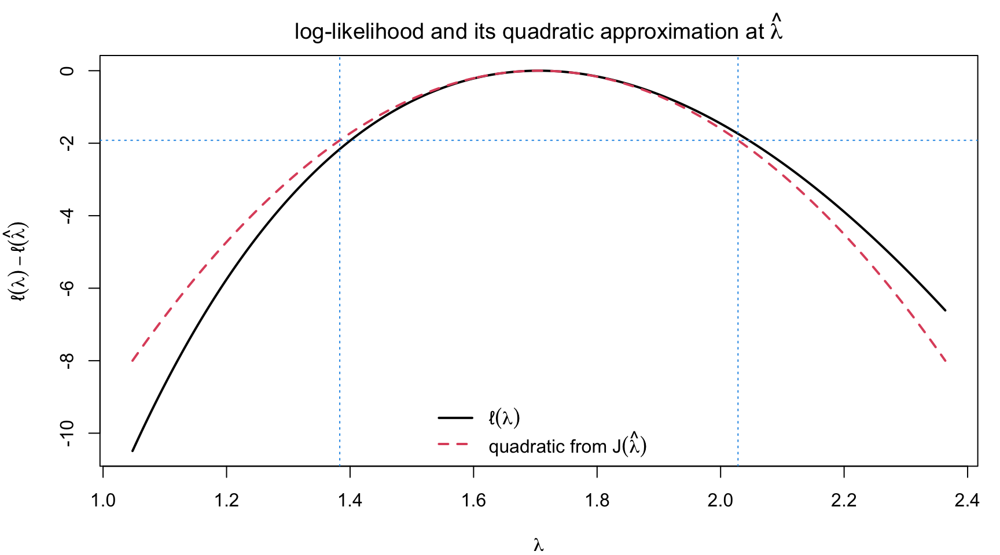
The parabola implied by the observed information tracks the log-likelihood closely over the width of the interval, so the Wald interval is trustworthy here.
All of this machinery is worth the effort only if the MLE beats the easy alternative. The naive estimator ignores the truncation and reports \(\overline x\). Simulating many truncated samples gives the sampling distributions of both estimators.
mle_nzp <- function(n)
uniroot(function(l) nzp.scorefunction(n, l), c(1e-6, 50), tol = 1e-10)$root
sim_nzp <- function(lambda, n_gen = 100, B = 500)
vapply(1:B, function(b) {
y <- rpois(n_gen, lambda); n <- y[y > 0]
c(naive = mean(n), mle = mle_nzp(n))
}, c(naive = 0, mle = 0))
for (lambda_true in c(0.5, 1.5)) {
est <- sim_nzp(lambda_true)
tab <- t(apply(est, 1, function(e)
c(bias = mean(e) - lambda_true, sd = sd(e), rmse = sqrt(mean((e - lambda_true)^2)))))
cat("\nlambda =", lambda_true, "\n"); print(round(tab, 4))
}
lambda = 0.5
bias sd rmse
naive 0.7666 0.0845 0.7712
mle -0.0101 0.1448 0.1450
lambda = 1.5
bias sd rmse
naive 0.4201 0.1162 0.4359
mle -0.0169 0.1590 0.1597est <- sim_nzp(1.5)
par(mfrow = c(1, 2), mar = c(4, 4.5, 2.5, 1))
for (m in c("naive", "mle")) {
hist(est[m, ], breaks = 25, col = "grey90",
xlim = range(est), xlab = TeX(r"($\hat{\lambda}$)"),
main = TeX(sprintf(r"(%s, bias $= %.3f$)", m, mean(est[m, ]) - 1.5)))
abline(v = 1.5, col = 2, lwd = 2, lty = 2)
}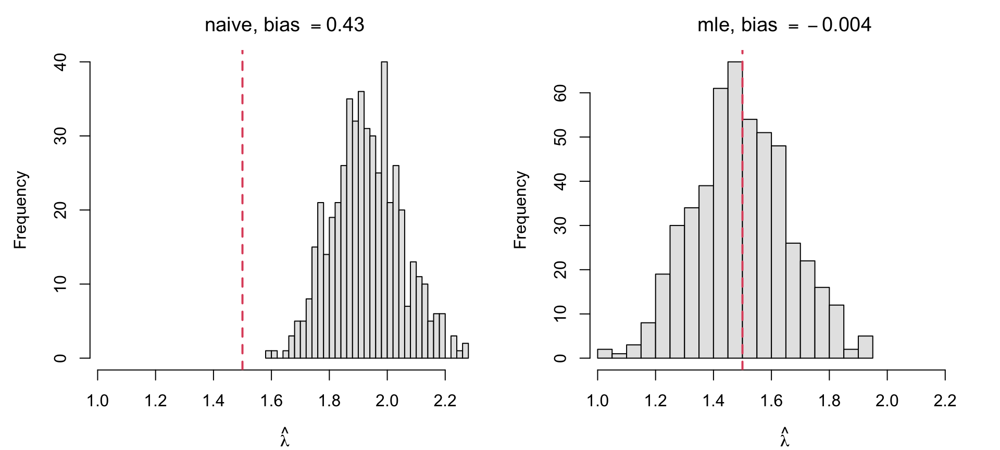
The naive estimator is biased upward, and severely so when \(\lambda\) is small, since that is when most of the probability mass sits on the discarded zero. Its bias does not shrink with sample size: it reflects the wrong model, not too little data. The MLE is centred on the truth with a standard deviation matching the information-based standard error of the previous section. The optimization was the means; the correct estimator was the end.
Not every likelihood is well approximated by a parabola, and when it is not, the information-based standard error misleads. Suppose each Poisson observation is known only to lie in an interval \([l_i, h_i]\). Then \[ \ell(\lambda) = \sum_{i=1}^{n} \log \Pr\left(l_i \le X_i \le h_i \mid \lambda\right) = \sum_{i=1}^{n} \log \sum_{x = l_i}^{h_i} \frac{e^{-\lambda}\lambda^{x}}{x!} . \]
The inner sum is computed on the log scale with the log-sum-exp trick to avoid underflow, and the maximization is delegated to nlm, which returns a numerical Hessian and hence a standard error.
log_sum_exp <- function(lx) { mlx <- max(lx); mlx + log(sum(exp(lx - mlx))) }
poisson_log_likelihood <- function(lambda, low, high)
sum(vapply(seq_along(low),
function(i) log_sum_exp(dpois(low[i]:high[i], lambda, log = TRUE)),
numeric(1)))
### equivalently, and faster: sum(log(ppois(high, lambda) - ppois(low - 1, lambda)))
poisson_mle <- function(low, high) {
if (length(low) != length(high)) stop("low and high have different lengths")
if (any(floor(low) != low) || any(floor(high) != high)) stop("interval ends are not integers")
fit <- nlm(function(l) -poisson_log_likelihood(l, low, high),
p = (mean(low) + mean(high)) / 2, hessian = TRUE)
est <- fit$estimate; sd <- sqrt(1 / fit$hessian[1, 1])
list(est = est, sd = sd, CI = est + c(-1.96, 1.96) * sd)
}pn <- rpois(1000, lambda = 20)
tight <- poisson_mle(pmax(pn - 1, 0), pn + 4) # narrow intervals: much information
wide <- poisson_mle(pmax(pn - 5, 0), pn + 5) # wide intervals: little information
rbind(tight = c(est = tight$est, sd = tight$sd, tight$CI),
wide = c(est = wide$est, sd = wide$sd, wide$CI)) est sd
tight 21.53996 0.1565054 21.23321 21.84671
wide 20.00541 0.1752922 19.66183 20.34898lam_grid <- seq(1, 50, by = 0.5)
par(mfrow = c(1, 2), mar = c(4, 4.5, 2.5, 1))
for (iv in list(list(lo = pmax(pn - 1, 0), hi = pn + 4, lab = "narrow intervals"),
list(lo = pmax(pn - 50, 0), hi = pn + 5, lab = "wide intervals"))) {
lp <- vapply(lam_grid, poisson_log_likelihood, numeric(1), low = iv$lo, high = iv$hi)
plot(lam_grid, lp - max(lp), type = "l", lwd = 2, ylim = c(-50, 0),
xlab = TeX(r"($\lambda$)"), ylab = TeX(r"($\ell(\lambda) - \ell(\hat{\lambda})$)"),
main = TeX(sprintf(r"(%s)", iv$lab)))
abline(h = -1.92, col = 4, lty = 3)
}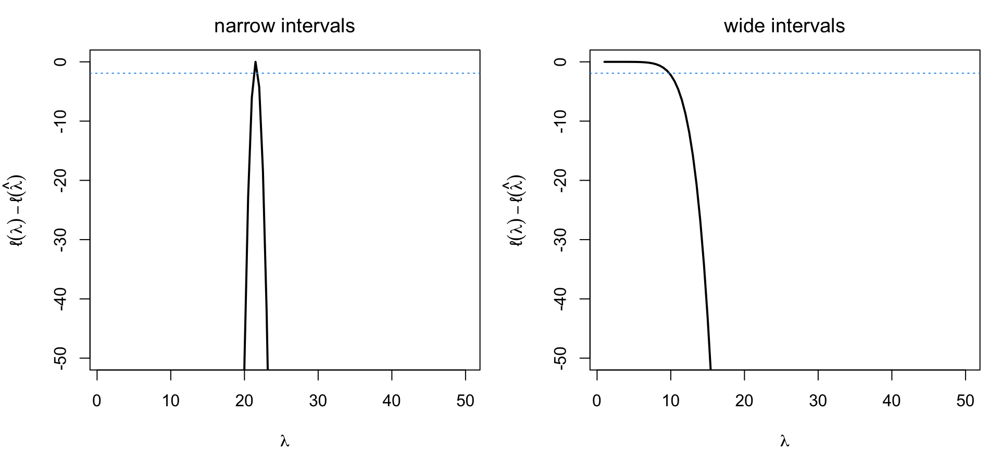
With narrow intervals the log-likelihood is sharply peaked and the standard error is small and reliable. With wide intervals, most of which include the lower boundary at zero, the log-likelihood is nearly flat over a broad range: the curvature at the maximum is tiny, the reported standard error is large, and — because the curve is visibly asymmetric and non-quadratic — even that large value understates the true uncertainty. The information-based standard error is an asymptotic approximation resting on local quadratic behaviour, and this is what its failure looks like. When the log-likelihood is this shape, report a likelihood-based interval, read off where \(\ell\) drops by 1.92, instead of a Wald interval.
In the previous section the parameter was a scalar, and the log-likelihood could be inspected by plotting it. Once \(\theta \in \mathbb{R}^p\) neither is true: we cannot see the surface, and the notion of “bracketing a root” that underlies bisection and golden section has no direct multivariate analogue. What survives is the local quadratic approximation, and the Newton–Raphson algorithm is its direct consequence.
This section develops the multivariate Newton–Raphson method and its statistical variant, Fisher scoring, applies both to logistic regression, examines interactively how and why the iteration can diverge, and closes with a survey of the derivative-free and gradient-only alternatives.
Write the log-likelihood as \(\ell(\theta)\) for \(\theta \in \mathbb{R}^p\), and define. \[ S(\theta) = \frac{\partial \ell(\theta)}{\partial \theta} \quad (p \times 1, \text{ the score}), \qquad H(\theta) = \frac{\partial^2 \ell(\theta)}{\partial \theta \, \partial \theta^{\top}} \quad (p \times p, \text{ the Hessian}). \]
The negative Hessian \(J(\theta) = -H(\theta)\) is the observed information matrix.
Expand \(\ell\) to second order about the current iterate \(\theta^{(k)}\): $$ () ;; (^{(k)})
This is a quadratic in \(\theta\). If \(J(\theta^{(k)})\) is positive definite the quadratic has a unique maximum, found by setting its derivative to zero: \[ S(\theta^{(k)}) - J(\theta^{(k)})(\theta - \theta^{(k)}) = 0 . \]
Solving for \(\theta\) gives the Newton–Raphson update: \[ \boxed{\;\theta^{(k+1)} = \theta^{(k)} + J(\theta^{(k)})^{-1} S(\theta^{(k)}) \;}. \]
The algorithm therefore replaces the log-likelihood by the quadratic that matches its value, slope and curvature at the current point, and jumps to the maximum of that quadratic. Everything that follows — the fast convergence, and the modes of failure — comes from how good or bad that replacement is.
Three remarks are worth making explicit.
The inverse is never formed. Write the update as \(\theta^{(k+1)} = \theta^{(k)} + \delta^{(k)}\) where \(\delta^{(k)}\) solves the linear system \(J(\theta^{(k)})\,\delta = S(\theta^{(k)})\). In R this is solve(J, S), not solve(J) %*% S. The former is faster and numerically more stable; the latter computes \(p^2\) numbers in order to use \(p\) of them.
The step is not the gradient direction. \(\delta^{(k)} = J^{-1}S\) points along the gradient only when \(J\) is a multiple of the identity. The information matrix rescales and rotates the ascent direction to account for differing curvature and correlation among the parameters, which is exactly why Newton–Raphson is insensitive to the scaling of the parameters while gradient descent is not.
Positive definiteness is an assumption, not a guarantee. Away from the maximum \(J(\theta^{(k)})\) can be indefinite or singular, in which case the “maximum of the quadratic” is a saddle point or does not exist, and \(\delta^{(k)}\) may point downhill. Section 5.7 examines this.
The observed information \(J(\theta)\) depends on the data. Its expectation under the model, \[ I(\theta) = E_{\theta}\{J(\theta)\} = -E_{\theta}\left\{ \frac{\partial^2 \ell(\theta)}{\partial \theta \, \partial \theta^{\top}} \right\}, \]
is the expected (Fisher) information matrix. Replacing \(J\) by \(I\) in the update gives the method of scoring: \[ \theta^{(k+1)} = \theta^{(k)} + I(\theta^{(k)})^{-1} S(\theta^{(k)}). \]
The two algorithms have different iterates but the same fixed point, since both stop where \(S(\theta) = 0\). The practical differences:
| Newton–Raphson | Fisher scoring | |
|---|---|---|
| Curvature matrix | Observed information \(J(\theta)\) | Expected information \(I(\theta)\) |
| Derivation | Second derivative of \(\ell\) | Expectation of that second derivative |
| Positive definite? | Only guaranteed near the maximum | Always, wherever the model is identified |
| Algebra | Can be messy | Often simpler, as data-dependent terms average out |
| Local convergence | Quadratic | Linear, but typically with a very small rate constant |
| Stability from poor starts | Less stable | More stable |
The guaranteed positive definiteness of \(I(\theta)\) is the main practical argument for scoring: the update direction is always an ascent direction, so the iteration cannot be sent uphill-seeking in a downhill direction by an ill-behaved Hessian.
For generalised linear models with the canonical link the two coincide exactly, because the second derivative of the log-likelihood does not involve the response. Logistic regression uses the canonical logit link, so the example below is simultaneously Newton–Raphson, Fisher scoring, and — as we note at the end of the section — iteratively reweighted least squares.
The two objects entering the multivariate Newton step have a direct geometric reading. The score \(S(\theta)\) is the direction of steepest ascent and is perpendicular to the contour of \(\ell\) through \(\theta\); the Hessian \(H(\theta)\) describes how that direction curves, and at a strict local maximum \(J(\theta) = -H(\theta)\) is positive definite. Near \(\hat\theta\), \(\ell\) is well approximated by the quadratic \[ \ell(\theta) \approx \ell(\hat\theta) - \tfrac12(\theta - \hat\theta)^\top J(\hat\theta)(\theta - \hat\theta), \] whose contours are ellipses centred at \(\hat\theta\). Writing the eigendecomposition \(J(\hat\theta) = Q\Lambda Q^\top\), the axes of these ellipses point along the eigenvectors in \(Q\), and the half-length along axis \(j\) is proportional to \(1/\sqrt{\lambda_j}\): a large eigenvalue means sharp curvature and a short, well-determined direction, while \(\lambda_{\max}/\lambda_{\min}\) measures how elongated — and, once the axes are tilted, how correlated the parameters are.
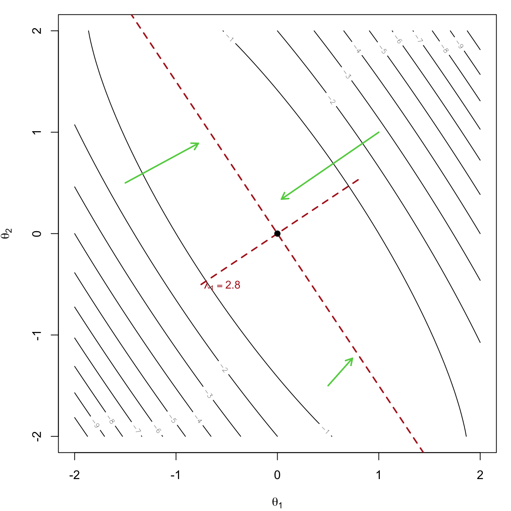
Every gradient arrow in the figure is perpendicular to the contour it starts on and points generally uphill toward the maximum at the origin, but only an arrow started exactly on a principal axis points straight at it. This is why Newton’s step, which multiplies the score by \(J(\hat\theta)^{-1}\) rather than simply following the gradient, converges directly to \(\hat\theta\): it rescales and rotates the ascent direction to undo exactly this distortion. The plain gradient-ascent methods of a later section have no such correction, and zig-zag across elongated contours like these.
Near a maximum \(\hat\theta\) at which \(J(\hat\theta)\) is positive definite, Newton–Raphson converges quadratically: the error satisfies \[ \\lvert\theta^{(k+1)} - \hat\theta\ vert \;\le\; C \,\\lvert\theta^{(k)} - \hat\theta\ vert^{2}, \]
for some constant \(C\) depending on the third derivatives. Informally, the number of correct digits doubles at each iteration, which is why five or six iterations are usually enough and why a well-started run appears to converge instantly.
The qualification “near” is essential. The theorem is local: it guarantees nothing about a start far from \(\hat\theta\), and nothing at all if \(J\) fails to be positive definite along the way.
At convergence the same matrix that drove the iteration supplies the asymptotic variance. Under the usual regularity conditions, \[ \hat\theta \;\dot\sim\; N\!\left(\theta, \; J(\hat\theta)^{-1}\right), \]
so \(\operatorname{\mathrm{SE}}(\hat\theta_j) = \sqrt{[J(\hat\theta)^{-1}]_{jj}}\). This is a genuine practical advantage of Newton-type methods over derivative-free ones: the curvature information needed for inference has already been computed. Methods that never form a Hessian require a separate numerical differentiation step, which is what hessian = TRUE requests from nlm and optim.
With a single covariate \(z_i\) and binary response \(r_i\), let \(u_i = \beta_0 + \beta_1 z_i\) and \(p_i = e^{u_i}/(1 + e^{u_i})\). The log-likelihood is \[ \ell(\beta) = \sum_{i=1}^{n}\left\{ r_i u_i - \log\left(1 + e^{u_i}\right) \right\}. \]
Writing \(X\) for the \(n \times 2\) design matrix with rows \((1, z_i)\), the score and information are. \[ S(\beta) = X^{\top}(r - p), \qquad J(\beta) = X^{\top} W X, \qquad W = \operatorname{diag}\{p_i(1 - p_i)\}. \]
Note that \(J\) does not involve \(r\). This is the canonical-link property mentioned above, and it means \(J(\beta) = I(\beta)\) identically.
Two numerical points, both carried over from the chapter on computer arithmetic. First, \(\log(1 + e^{u})\) overflows for \(u \gtrsim 710\); the stable form is \(\log(1+e^u) = \max(u,0) + \log(1 + e^{-|u|})\). Second, \(p_i(1-p_i) \to 0\) when \(|u_i|\) is large, so \(W\) — and hence \(J\) — degenerates toward singularity when the fitted probabilities are extreme. That observation is the whole explanation of the divergence we are about to see.
### numerically stable log(1 + exp(u))
log1pexp <- function(u) pmax(u, 0) + log1p(exp(-abs(u)))
### negative log-likelihood, negative score, and information matrix
lik_score_info <- function(b, r, z) {
u <- b[1] + b[2] * z
p <- plogis(u)
w <- p * (1 - p)
list(
neg_loglik = -sum(u * r - log1pexp(u)),
neg_score = -c(sum(r - p), sum(z * (r - p))),
inf = matrix(c(sum(w), sum(z * w),
sum(z * w), sum(z * z * w)), 2, 2)
)
}
neg_logp_logistic <- function(b, z, r) {
u <- b[1] + b[2] * z
-sum(u * r - log1pexp(u))
}Because we minimise the negative log-likelihood, the update \(\beta^{(k+1)} = \beta^{(k)} + J^{-1}S\) becomes \(\beta^{(k+1)} = \beta^{(k)} - J^{-1} \times (\text{negative score})\), which is the form coded below.
mle_logistic_nr <- function(b0, no_iter, r, z, debug = FALSE) {
out <- matrix(NA_real_, no_iter + 1, 3,
dimnames = list(NULL, c("beta0", "beta1", "neg_loglike")))
b <- b0
for (i in seq_len(no_iter + 1)) {
q <- lik_score_info(b, r, z)
out[i, ] <- c(b, q$neg_loglik)
if (debug) print(out[i, ])
if (i > no_iter) break
step <- tryCatch(solve(q$inf, q$neg_score),
error = function(e) rep(NA_real_, 2))
if (any(!is.finite(step))) break
b <- b - step
}
out
}gen_logistic_data <- function(b, n) {
z <- sort(runif(n, -2, 2))
p <- plogis(b[1] + b[2] * z)
r <- rbinom(n, 1, p)
plot(z, p, type = "l", ylim = c(0, 1), ylab = "P(r = 1)")
points(z, r, col = r + 1)
list(z = z, r = r)
}
set.seed(1)
data <- gen_logistic_data(c(0, 1.5), 200)
A start close to the truth converges in a handful of iterations:
round(mle_logistic_nr(c(0, 3), 8, data$r, data$z), 6) beta0 beta1 neg_loglike
[1,] 0.000000 3.000000 117.03598
[2,] -0.505055 -0.306054 164.86061
[3,] -0.040097 1.281039 99.03765
[4,] -0.251124 1.470987 97.74624
[5,] -0.272205 1.502838 97.72964
[6,] -0.272532 1.503424 97.72964
[7,] -0.272532 1.503424 97.72964
[8,] -0.272532 1.503424 97.72964
[9,] -0.272532 1.503424 97.72964The doubling of correct digits predicted by the quadratic-convergence result is visible in the final rows.
nlm and glmlogit_nlm <- nlm(neg_logp_logistic, c(0, 0),
z = data$z, r = data$r, hessian = TRUE)
logit_nlm$estimate[1] -0.2725325 1.5034237sqrt(diag(solve(logit_nlm$hessian))) # asymptotic standard errors[1] 0.1797391 0.2089673summary(glm(r ~ z, family = binomial(), data = data))$coefficients Estimate Std. Error z value Pr(>|z|)
(Intercept) -0.2725322 0.1797371 -1.516283 1.294479e-01
z 1.5034244 0.2089473 7.195234 6.235374e-13The three routes agree to printing accuracy. glm is doing the same arithmetic as mle_logistic_nr: for a GLM the Newton–Raphson step can be rearranged as a weighted least-squares fit of the working response \(u_i + (r_i - p_i)/\{p_i(1-p_i)\}\) on \(X\) with weights \(p_i(1-p_i)\), giving iteratively reweighted least squares (IRLS). This is not a different algorithm but a different arrangement of the same one, and it explains why glm reports “Fisher Scoring iterations” in its output.
The quadratic approximation is trustworthy only in a neighbourhood of the current iterate. Starting from a large \(\lvert\beta_1 vert\), nearly all fitted probabilities are pushed to \(0\) or \(1\), so the weights \(p_i(1-p_i)\) are essentially zero, \(J\) is nearly singular, and \(J^{-1}\) is enormous. The resulting step is huge, the new iterate lands far outside the region where the quadratic was a reasonable fit, and the process can oscillate or run off to infinity — even though the logistic log-likelihood is globally concave and has a unique maximum.
Press the play button on the iteration slider to animate the path over the contours of the negative log-likelihood. This app runs live only in the HTML edition of this book; readers of other formats can follow the link below it.
#| '!! shinylive warning !!': |
#| shinylive does not work in self-contained HTML documents.
#| Please set `embed-resources: false` in your metadata.
#| label: nr-divergence-app
#| standalone: true
#| viewerHeight: 800
library(shiny)
### ---------- fixed data ----------------------------------------------------
set.seed(1)
n <- 200
z <- sort(runif(n, -2, 2))
r <- rbinom(n, 1, plogis(0 + 1.5 * z))
log1pexp <- function(u) pmax(u, 0) + log1p(exp(-abs(u)))
negll <- function(b) {
u <- b[1] + b[2] * z
-sum(u * r - log1pexp(u))
}
### ---------- contour grid (computed once) ----------------------------------
B0 <- seq(-3, 3, by = 0.1)
B1 <- seq(-8, 8, by = 0.2)
Z <- outer(B0, B1, Vectorize(function(a, b) negll(c(a, b))))
### ---------- Newton-Raphson path -------------------------------------------
nr_path <- function(b0, maxit = 15, halving = FALSE) {
P <- matrix(NA_real_, maxit + 1, 3,
dimnames = list(NULL, c("beta0", "beta1", "negll")))
b <- b0
P[1, ] <- c(b, negll(b))
for (i in seq_len(maxit)) {
u <- b[1] + b[2] * z
p <- plogis(u)
w <- p * (1 - p)
g <- -c(sum(r - p), sum(z * (r - p)))
J <- matrix(c(sum(w), sum(z * w), sum(z * w), sum(z * z * w)), 2, 2)
step <- tryCatch(solve(J, g), error = function(e) rep(NA_real_, 2))
if (any(!is.finite(step))) break
if (halving) {
f0 <- P[i, 3]; s <- 1
repeat {
bn <- b - s * step
fn <- negll(bn)
if ((is.finite(fn) && fn <= f0) || s < 1e-6) break
s <- s / 2
}
b <- bn
} else {
b <- b - step
}
if (any(!is.finite(b))) break
P[i + 1, ] <- c(b, negll(b))
}
P
}
### ---------- UI -------------------------------------------------------------
ui <- fluidPage(
titlePanel(NULL),
sidebarLayout(
sidebarPanel(
width = 4,
numericInput("b0", HTML("starting β<sub>0</sub>"),
value = 0, step = 0.5),
numericInput("b1", HTML("starting β<sub>1</sub>"),
value = 5, step = 0.5),
checkboxInput("halve", "apply step halving", FALSE),
sliderInput("iter", "iteration", min = 0, max = 15, value = 0,
step = 1, animate = animationOptions(interval = 900)),
helpText("Try (0, 3) and then (0, 5). The second start makes the ",
"information matrix nearly singular, so the first step ",
"overshoots badly."),
tableOutput("tab")
),
mainPanel(
width = 8,
plotOutput("contour", height = "380px"),
plotOutput("trace", height = "200px")
)
)
)
### ---------- server ---------------------------------------------------------
server <- function(input, output, session) {
path <- reactive({
nr_path(c(input$b0, input$b1), maxit = 15, halving = input$halve)
})
shown <- reactive({
P <- path()
k <- min(input$iter + 1, nrow(P))
P[seq_len(k), , drop = FALSE]
})
output$contour <- renderPlot({
P <- shown()
par(mar = c(4, 4, 2, 1))
contour(B0, B1, Z, nlevels = 40, drawlabels = FALSE,
col = "grey70",
xlab = expression(beta[0]), ylab = expression(beta[1]),
main = "negative log-likelihood surface and NR path")
ok <- complete.cases(P)
if (sum(ok) > 1) {
lines(P[ok, 1], P[ok, 2], col = "steelblue", lwd = 2)
points(P[ok, 1], P[ok, 2], pch = 21, bg = "steelblue", cex = 1.1)
}
last <- P[max(which(complete.cases(P))), , drop = FALSE]
points(last[1], last[2], pch = 21, bg = "firebrick", cex = 1.8)
outside <- last[1] < min(B0) || last[1] > max(B0) ||
last[2] < min(B1) || last[2] > max(B1)
if (isTRUE(outside)) {
mtext(sprintf("current iterate (%.1f, %.1f) is off the plotted region",
last[1], last[2]), side = 3, line = -1.5,
col = "firebrick", cex = 0.9)
}
points(0, 1.5, pch = 3, col = "darkgreen", lwd = 2)
})
output$trace <- renderPlot({
P <- path()
k <- min(input$iter + 1, nrow(P))
par(mar = c(4, 4, 1, 1))
yl <- range(P[, 3], na.rm = TRUE)
plot(0:(nrow(P) - 1), P[, 3], type = "n", ylim = yl,
xlab = "iteration", ylab = "negative log-likelihood")
lines(0:(k - 1), P[seq_len(k), 3], type = "b", pch = 19,
col = "steelblue")
})
output$tab <- renderTable({
P <- shown()
d <- as.data.frame(P)
d$iteration <- seq_len(nrow(d)) - 1
d <- d[, c("iteration", "beta0", "beta1", "negll")]
tail(d, 5)
}, digits = 4, rownames = FALSE)
}
shinyApp(ui, server)The chunk above uses the shinylive extension, which compiles the app to WebAssembly so that it runs in the reader’s browser with no Shiny server. Install it once per project with
quarto add quarto-ext/shinyliveand add filters: [shinylive] to the document or project YAML. Only packages available in webR may be used inside the app, so the code above is restricted to base R and shiny.
The divergence is not a defect of the Newton direction but of the Newton step length. The standard remedies all keep the direction and control the distance.
Step halving (backtracking). Take \(\delta^{(k)}\) as usual but move \(\theta^{(k+1)} = \theta^{(k)} + s\,\delta^{(k)}\), starting from \(s = 1\) and halving until the log-likelihood actually increases. This costs a few extra function evaluations, never damages quadratic convergence near the maximum (where \(s = 1\) is accepted on the first try), and rescues most divergent runs. Toggle it in the app above to see the effect.
Ridging (Levenberg–Marquardt). Replace \(J\) by \(J + \lambda \mathbb{I}\) with \(\lambda > 0\). Large \(\lambda\) shrinks the step toward a small gradient step; \(\lambda \to 0\) recovers Newton. This also repairs indefiniteness, and is the approach nlm takes internally.
Trust regions. Maximise the quadratic approximation subject to \(\\lvert\theta - \theta^{(k)}\
vert \le \Delta_k\), adapting \(\Delta_k\) according to how well the quadratic predicted the realised change. This is nlminb and the PORT routines.
Reparameterisation and good starts. Often the cheapest fix. Centring and scaling covariates improves conditioning of \(J\) substantially, and for GLMs the null-model fit is a reliable starting point — which is what glm uses when start is not supplied.
Two more precise versions of these ideas are worth stating explicitly, since together they make up what is sometimes called safeguarded Newton — not “Newton–Raphson” in the textbook sense, and not what nlm() runs internally, which globalises with a trust region instead.
A principled choice of ridge. Write \(\delta_k = J_k^{-1}S_k\) for the raw Newton step at \(\theta_k\) (with \(J_k = J(\theta_k)\), \(S_k = S(\theta_k)\)). Two things can go wrong once \(\theta_k\) is far from \(\hat\theta\): the direction may not ascend at all, since \(S_k^\top \delta_k = S_k^\top J_k^{-1}S_k > 0\) requires \(J_k \succ 0\), which need not hold where \(\ell\) is not concave; and even when \(J_k \succ 0\), the full step can overshoot, since the quadratic model is trustworthy only near \(\theta_k\). Ridging replaces \(J_k\) by \[ \tilde J_k = J_k + \tau I, \qquad \tau = \max\!\big(0,\ \delta - \lambda_{\min}(J_k)\big), \qquad \delta = 10^{-3}\,\lambda_{\max}(J_k), \] which shifts every eigenvalue of \(J_k\) by \(\tau\) while leaving its eigenvectors unchanged. As \(\tau \to \infty\) the resulting direction \(\tilde J_k^{-1}S_k\) rotates toward \(S_k\) itself — plain gradient ascent — so ridging interpolates continuously between Newton and steepest ascent. An alternative, spectral modification, decomposes \(J_k = V\Lambda V^\top\) and replaces each eigenvalue \(\lambda_i\) by \(\max(\lvert\lambda_i vert, \delta)\): this reverses negative-curvature directions rather than merely damping them, pushing the step away from a saddle instead of just slowing it down. Wherever \(J_k \succ 0\) already, both reduce to \(\tau = 0\) and \(\tilde J_k = J_k\), so the safeguard is inactive exactly where it is not needed.
A precise stopping rule for step halving: the Armijo condition. Accepting the halved step \(\theta_k + s\,\delta_k\) the first time the log-likelihood merely fails to decrease is workable but crude. The standard criterion instead requires a sufficient increase, \[ \ell(\theta_k + s\,\delta_k) \ \ge\ \ell(\theta_k) + c_1\, s\, S_k^\top \delta_k, \qquad c_1 = 10^{-4}, \] tested at \(s = 1, \rho, \rho^2, \ldots\) for a fixed \(\rho \in (0,1)\) (e.g. \(\rho = \tfrac12\)) until it holds. Because \(c_1\) is tiny, \(s = 1\) passes immediately whenever the ordinary Newton step already improves \(\ell\), so quadratic convergence near \(\hat\theta\) is untouched. A companion curvature (Wolfe) condition, \[ S(\theta_k + s\,\delta_k)^\top \delta_k \ \le\ c_2\, S_k^\top \delta_k, \qquad c_2 = 0.9, \] additionally rules out steps that are cut too short — something plain backtracking, which only ever shrinks \(s\), cannot enforce on its own. This second condition matters less for Newton itself than for the gradient-only methods of the next section, where it is exactly what keeps the BFGS update well defined.
Both safeguards switch themselves off automatically near a well-behaved maximum, and stay active only where they are needed:
| near the maximum | far away / indefinite | |
|---|---|---|
| ridge \(\tau\) | \(0\) | \(> 0\), direction rotates toward \(S_k\) |
| step \(s_k\) | \(1\) | \(< 1\) |
so quadratic convergence is retained locally while sufficient increase at every iteration guarantees progress from remote starting points — the combination that step halving, ridging, trust regions, and good starting values each approximate in the plainer forms described above.
Newton–Raphson is the method of choice when the second derivatives are available and \(p\) is modest. Outside that regime, three considerations push toward alternatives: derivatives may be unavailable or painful to code; the \(O(p^3)\) cost of solving the Newton system and the \(O(p^2)\) storage of \(J\) become prohibitive for large \(p\); and the objective may be non-smooth, noisy or multimodal.
Throughout this section it is more convenient to minimise \(f(\theta) = -\ell(\theta)\) rather than maximise \(\ell\) directly — the minimum of \(f\) is exactly the maximum of \(\ell\), and this is also the convention that R’s optim(), nlm(), and nlminb() use internally, so the code below matches what those functions do under the hood.
Methods are most usefully organised by what they require of the objective.
| Order | Requires | Methods | Typical use |
|---|---|---|---|
| 0 | Function values only | Nelder–Mead, simulated annealing, genetic algorithms | Non-smooth, discontinuous, or awkward-to-differentiate objectives; small \(p\) |
| 1 | Gradient | Steepest descent, conjugate gradient, quasi-Newton (BFGS, L-BFGS), stochastic gradient descent | The workhorse class; large \(p\); gradients cheap by automatic differentiation |
| 2 | Gradient and Hessian | Newton–Raphson, Fisher scoring, IRLS, trust-region Newton | Statistical models of modest dimension where the Hessian is also wanted for inference |
Move along \(-\nabla f\), the direction of steepest descent, choosing the distance by a one-dimensional search: \[ \theta_{k+1} = \theta_k + \alpha_k d_k, \qquad d_k = -\nabla f(\theta_k), \qquad \alpha_k = \arg\min_{\alpha > 0} f(\theta_k + \alpha d_k) . \]
The step length \(\alpha_k\) can come from an exact line search — a univariate minimization by golden section or optimize() along the ray — or an inexact one: start at \(\alpha = 1\) and halve until the Armijo sufficient-decrease condition \(f(\theta_k + \alpha d_k) \le f(\theta_k) + c\,\alpha\,\nabla f(\theta_k)'d_k\) holds. This is conceptually the simplest gradient method, and the one that best illustrates the role of a line search, but its convergence is only linear, and the rate deteriorates with the condition number of the Hessian: on an elongated valley the iterates zig-zag across it rather than travelling along it, as the next figure shows. It is rarely used unmodified.
grad_descent <- function(f, gr, x0, maxit = 1000, tol = 1e-8) {
path <- x0
for (k in 1:maxit) {
d <- -gr(x0); a <- optimize(function(a) f(x0 + a * d), c(0, 10))$minimum # exact line search
x1 <- x0 + a * d; path <- rbind(path, x1)
if (sqrt(sum((x1 - x0)^2)) < tol) break
x0 <- x1 }
list(par = x1, iter = k, path = path)
}With an exact line search, consecutive directions are orthogonal — \(\nabla f(\theta_{k+1})'d_k = 0\), since the search stops exactly where the directional derivative along \(d_k\) vanishes. On the elongated contours of the quadratic from Figure 5.16, that orthogonality forces the path to zig-zag back and forth across the valley instead of running down its length:
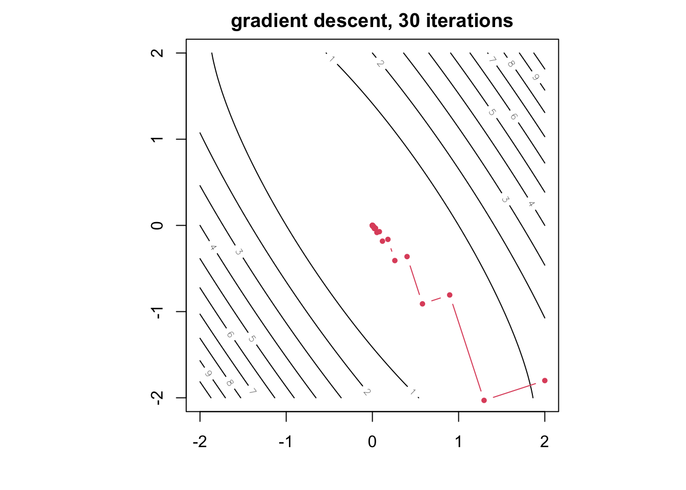
The number of iterations needed grows with the condition number \(\lambda_{\max}/\lambda_{\min}\) of the Hessian — precisely the elongation of the ellipses in the earlier figure.
The zig-zag is fixed by choosing each new direction to be conjugate to the previous ones with respect to the Hessian \(Q\): \(d_i'Qd_j = 0\) for \(i \ne j\). For a quadratic \(f(\theta) = \tfrac12\theta'Q\theta - b'\theta\), minimizing along \(p\) such directions in succession reaches the exact minimum in at most \(p\) steps, without ever forming or storing \(Q\) — storage is \(O(p)\), its defining advantage over Newton.
The nonlinear version builds directions from gradients only: \[ d_0 = -g_0, \qquad d_{k+1} = -g_{k+1} + \beta_k d_k, \] \[ \beta_k^{\mathrm{FR}} = \frac{g_{k+1}'g_{k+1}}{g_k'g_k}\ \text{(Fletcher–Reeves)}, \qquad \beta_k^{\mathrm{PR}} = \frac{g_{k+1}'(g_{k+1} - g_k)}{g_k'g_k}\ \text{(Polak–Ribière)}, \] with \(\theta_{k+1} = \theta_k + \alpha_k d_k\) from a line search and \(g_k = \nabla f(\theta_k)\). Fletcher–Reeves and Polak–Ribière differ only in this correction coefficient. The method is sensitive to the accuracy of the line search, and conjugacy degrades on non-quadratic \(f\), so it is usually restarted with \(d = -g\) every \(p\) iterations.
conj_grad <- function(f, gr, x0, maxit = 1000, tol = 1e-8, restart = length(x0)) {
g0 <- gr(x0); d <- -g0; path <- x0
for (k in 1:maxit) {
a <- optimize(function(a) f(x0 + a * d), c(0, 10))$minimum
x1 <- x0 + a * d; g1 <- gr(x1); path <- rbind(path, x1)
if (sqrt(sum(g1^2)) < tol) break
beta <- if (k %% restart == 0) 0 else max(0, sum(g1 * (g1 - g0)) / sum(g0^2)) # Polak-Ribiere+
d <- -g1 + beta * d; x0 <- x1; g0 <- g1 }
list(par = x1, iter = k, path = path)
}
cg <- conj_grad(fq, gq, c(2, -1.8))
par(pty = "s", mar = c(4, 4, 2, 1))
contour(s, s, -z, nlevels = 15, main = sprintf("conjugate gradient, %d iterations", cg$iter))
lines(gd$path, type = "b", col = 2, pch = 19, cex = 0.6); lines(cg$path, type = "b", col = 4, pch = 19, lwd = 2)
legend("topleft", c("gradient descent", "conjugate gradient"), col = c(2, 4), lwd = 2, bty = "n")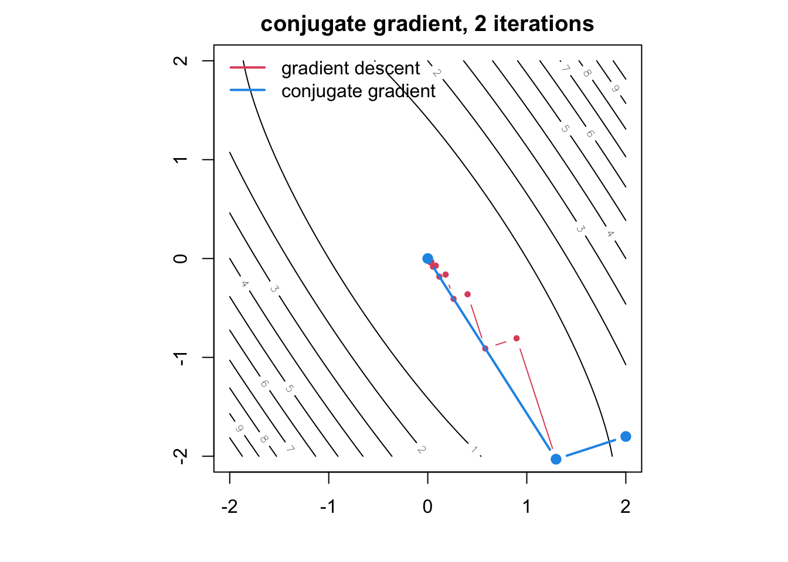
BFGS sits between the gradient methods above and Newton’s method: it builds an approximation \(B_k \approx J(\theta_k)\) from successive gradient differences \(s_k = \theta_{k+1} - \theta_k\), \(y_k = g_{k+1} - g_k\), via a rank-two update that keeps \(B_k\) positive definite by construction (which is exactly why the Wolfe curvature condition of an earlier section matters: it is what guarantees \(s_k'y_k > 0\), and hence a well-defined update). Steps are \(d_k = -B_k^{-1}g_k\) with a line search, giving superlinear convergence from only first derivatives. BFGS itself stores a full \(p \times p\) approximation; L-BFGS keeps only the last few update vectors, reducing storage to \(O(mp)\) and making it the default choice for high-dimensional smooth problems. For most likelihood problems where the Hessian is awkward to derive, BFGS with an analytic gradient is the best practical compromise.
Returning to the logistic-regression example, optim() can fit it with no Hessian at all — Nelder–Mead needs only the log-likelihood, CG and BFGS also take the analytic gradient already coded for Newton–Raphson:
negll_fn <- function(b) neg_logp_logistic(b, data$z, data$r)
neggr_fn <- function(b) lik_score_info(b, data$r, data$z)$neg_score
fits <- list(NM = optim(c(0, 0), negll_fn, method = "Nelder-Mead"),
CG = optim(c(0, 0), negll_fn, neggr_fn, method = "CG"),
BFGS = optim(c(0, 0), negll_fn, neggr_fn, method = "BFGS", hessian = TRUE))
t(sapply(fits, function(f) c(f$par, f_evals = f$counts[1], g_evals = f$counts[2]))) f_evals.function g_evals.gradient
NM -0.2726011 1.503158 65 NA
CG -0.2725322 1.503424 25 9
BFGS -0.2725326 1.503425 31 9sqrt(diag(solve(fits$BFGS$hessian))) # SEs from the numerically computed Hessian at the optimum[1] 0.1797399 0.2089537All three land on the same estimate as mle_logistic_nr and glm above, and optim(..., hessian = TRUE) returns a finite-difference Hessian at the solution, so standard errors are available even for a method that never formed one during the iterations.
Press play to watch safeguarded Newton, gradient descent, conjugate gradient, and BFGS attack the same objective from the same start, on six test functions ranging from a well-conditioned quadratic to Rastrigin’s many local minima. Click anywhere in the contour panel to try a different starting point.
#| '!! shinylive warning !!': |
#| shinylive does not work in self-contained HTML documents.
#| Please set `embed-resources: false` in your metadata.
#| standalone: true
#| viewerHeight: 820
library(shiny)
## ---------------------------------------------------------------- objectives
mk <- function(label, fv, xlim, ylim, start, xstar) {
force(fv)
list(label = label, fv = fv, f = function(p) fv(p[1], p[2]),
xlim = xlim, ylim = ylim, start = start,
xstar = matrix(xstar, ncol = 2))
}
FNS <- list(
quad = mk(
"(a) Well-conditioned quadratic",
function(x, y) 0.5 * (2 * (x - 1)^2 + 1.6 * (x - 1) * (y - 1) +
2 * (y - 1)^2),
c(-3, 4), c(-3, 4), c(-2, 3), c(1, 1)
),
banana = mk(
"(b) Rosenbrock banana (narrow curved ridge)",
function(x, y) (1 - x)^2 + 100 * (y - x^2)^2,
c(-2, 2), c(-1, 3), c(-1.2, 1), c(1, 1)
),
mix = mk(
"(c) Highly correlated, two modes",
function(x, y) {
rho <- 0.9; den <- 1 - rho^2
q <- function(u, v) (u^2 - 2 * rho * u * v + v^2) / den
-log(exp(-0.5 * q(x - 1.2, y - 1.2)) +
0.6 * exp(-0.5 * q(x + 1.5, y + 1.5) / 1.5) + 1e-12)
},
c(-4, 4), c(-4, 4), c(-3, -0.5), c(1.2, 1.2)
),
himmel = mk(
"(d) Himmelblau (four global minima)",
function(x, y) (x^2 + y - 11)^2 + (x + y^2 - 7)^2,
c(-5, 5), c(-5, 5), c(-4, 4),
rbind(c(3, 2), c(-2.805118, 3.131312),
c(-3.779310, -3.283186), c(3.584428, -1.848126))
),
beale = mk(
"(e) Beale (flat plateau, sharp valley)",
function(x, y) (1.5 - x + x * y)^2 + (2.25 - x + x * y^2)^2 +
(2.625 - x + x * y^3)^2,
c(-4.5, 4.5), c(-4.5, 4.5), c(-1, 1), c(3, 0.5)
),
rastrigin = mk(
"(f) Rastrigin (many local minima)",
function(x, y) 20 + x^2 - 10 * cos(2 * pi * x) +
y^2 - 10 * cos(2 * pi * y),
c(-5.12, 5.12), c(-5.12, 5.12), c(-3.1, 4.2), c(0, 0)
)
)
## ------------------------------------------------- numerical derivatives
num_grad <- function(f, x) {
h <- 1e-5 * (1 + abs(x))
g <- numeric(2)
for (i in 1:2) {
e <- numeric(2); e[i] <- h[i]
g[i] <- (f(x + e) - f(x - e)) / (2 * h[i])
}
g
}
num_hess <- function(f, x) {
h <- 1e-4 * (1 + abs(x))
H <- matrix(0, 2, 2)
for (i in 1:2) for (j in i:2) {
ei <- numeric(2); ei[i] <- h[i]
ej <- numeric(2); ej[j] <- h[j]
H[i, j] <- (f(x + ei + ej) - f(x + ei - ej) -
f(x - ei + ej) + f(x - ei - ej)) / (4 * h[i] * h[j])
H[j, i] <- H[i, j]
}
H
}
## --------------------------------------------------- Wolfe line search
line_search <- function(f, g, x, d, a0 = 1, c1 = 1e-4, c2 = 0.9) {
f0 <- f(x); gd0 <- sum(g * d)
if (!is.finite(gd0) || gd0 >= 0) return(list(alpha = 0, ok = FALSE))
lo <- 0; hi <- Inf; a <- a0
for (it in 1:60) {
fa <- f(x + a * d)
if (!is.finite(fa) || fa > f0 + c1 * a * gd0) {
hi <- a; a <- 0.5 * (lo + hi)
} else {
ga <- num_grad(f, x + a * d)
if (sum(ga * d) < c2 * gd0) {
lo <- a
a <- if (is.finite(hi)) 0.5 * (lo + hi) else min(2 * a, 1e4)
} else {
return(list(alpha = a, ok = TRUE))
}
}
if (a < 1e-14) return(list(alpha = 0, ok = FALSE))
}
list(alpha = a, ok = (a > 0))
}
## ------------------------------------------------------------- algorithms
run_alg <- function(alg, FN, x0, maxit = 60, tol = 1e-6) {
f <- FN$f
X <- matrix(NA_real_, maxit + 1, 2); G <- matrix(NA_real_, maxit + 1, 2)
D <- matrix(NA_real_, maxit + 1, 2); Fv <- rep(NA_real_, maxit + 1)
AL <- rep(NA_real_, maxit + 1)
x <- x0; B <- diag(2)
g_prev <- NULL; d_prev <- NULL; s_prev <- NULL
n <- 0; note <- "maximum number of iterations reached"
for (k in seq_len(maxit)) {
g <- num_grad(f, x); gn <- sqrt(sum(g^2))
X[k, ] <- x; G[k, ] <- g; Fv[k] <- f(x); n <- k
if (!is.finite(gn)) { note <- "diverged"; break }
if (gn < tol) { note <- "converged (||grad|| < 1e-6)"; break }
if (alg == "nr") {
H <- num_hess(f, x); H <- (H + t(H)) / 2
ev <- eigen(H, symmetric = TRUE, only.values = TRUE)$values
delta <- 1e-3 * max(1, max(abs(ev)))
tau <- max(0, delta - min(ev))
d <- tryCatch(solve(H + tau * diag(2), -g), error = function(e) -g)
} else if (alg == "gd") {
d <- -g
} else if (alg == "cg") {
if (is.null(d_prev)) {
d <- -g
} else {
y <- g - g_prev
beta <- max(0, sum(g * y) / max(sum(g_prev^2), 1e-300)) # PR+
d <- -g + beta * d_prev
}
if (sum(g * d) > -1e-12) d <- -g # restart
} else { # BFGS
if (!is.null(s_prev)) {
y <- g - g_prev; sy <- sum(s_prev * y)
if (sy > 1e-10) {
rho <- 1 / sy
V <- diag(2) - rho * outer(s_prev, y)
B <- V %*% B %*% t(V) + rho * outer(s_prev, s_prev)
}
}
d <- -as.vector(B %*% g)
if (sum(g * d) > -1e-12) { B <- diag(2); d <- -g }
}
ls <- line_search(f, g, x, d)
D[k, ] <- d; AL[k] <- ls$alpha
if (ls$alpha <= 0) { note <- "line search failed (flat or non-descent)"; break }
s_prev <- ls$alpha * d; g_prev <- g; d_prev <- d
x <- x + s_prev
}
list(X = X[1:n, , drop = FALSE], G = G[1:n, , drop = FALSE],
D = D[1:n, , drop = FALSE], F = Fv[1:n], A = AL[1:n],
n = n, note = note)
}
ALGS <- c("Safeguarded Newton (modified Hessian + line search)" = "nr",
"Gradient descent + line search" = "gd",
"Conjugate gradient (PR+)" = "cg",
"BFGS (quasi-Newton)" = "bfgs")
## ---------------------------- widen the data box to the device aspect ratio
expand_box <- function(xlim, ylim, pin) {
if (length(pin) != 2 || any(!is.finite(pin)) || any(pin <= 0))
return(list(xlim = xlim, ylim = ylim))
r <- pin[1] / pin[2]
wd <- diff(xlim); ht <- diff(ylim)
if (wd / ht < r) {
w <- ht * r; m <- mean(xlim); xlim <- m + c(-0.5, 0.5) * w
} else {
h <- wd / r; m <- mean(ylim); ylim <- m + c(-0.5, 0.5) * h
}
list(xlim = xlim, ylim = ylim)
}
## --------------------------------------------------------------------- UI
ui <- fluidPage(
fluidRow(
## ---- column 1: controls -------------------------------------------
column(
3,
selectInput("alg", "Algorithm", ALGS),
selectInput("fn", "Objective function",
setNames(names(FNS), sapply(FNS, `[[`, "label"))),
sliderInput("k", "Iteration k", min = 0, max = 1, value = 0, step = 1),
checkboxInput("showpath", "Show the whole path", TRUE),
htmlOutput("info")
),
## ---- column 2: playback -------------------------------------------
column(
2,
div(
style = "margin-top:26px;",
actionButton("play", "Play", class = "btn-primary btn-lg",
style = "width:100%; margin-bottom:10px;"),
actionButton("step", "Next", class = "btn-lg",
style = "width:100%; margin-bottom:10px;"),
actionButton("back", "Prev", class = "btn-lg",
style = "width:100%;"),
hr(),
checkboxInput("autoplay", "Autoplay on Changing Initial", TRUE),
actionButton("reset", "Reset initial",
style = "width:100%; margin-bottom:8px;"),
helpText("Click inside the contour plot to choose a new initial value.")
)
),
## ---- column 3: plots ----------------------------------------------
column(
7,
plotOutput("contour", click = "click", height = "540px"),
plotOutput("conv", height = "190px")
)
)
)
## ----------------------------------------------------------------- server
server <- function(input, output, session) {
FN <- reactive(FNS[[input$fn]])
start <- reactiveVal(FNS[[1]]$start)
playing <- reactiveVal(FALSE)
observeEvent(input$fn, start(FNS[[input$fn]]$start))
observeEvent(input$reset, start(FN()$start))
observeEvent(input$click, {
p <- c(input$click$x, input$click$y)
if (all(is.finite(p))) start(p)
})
path <- reactive({
req(start())
run_alg(input$alg, FN(), start())
})
observeEvent(path(), {
updateSliderInput(session, "k", max = max(1, path()$n - 1), value = 0)
playing(isTRUE(input$autoplay) && path()$n > 1)
})
observeEvent(input$play, {
if (isTRUE(playing())) {
playing(FALSE)
} else {
if (as.integer(input$k) >= path()$n - 1)
updateSliderInput(session, "k", value = 0)
playing(TRUE)
}
})
observeEvent(playing(), {
updateActionButton(session, "play",
label = if (isTRUE(playing())) "Pause" else "Play")
})
observe({
if (!isTRUE(playing())) return()
kmax <- isolate(path()$n) - 1
k <- isolate(as.integer(input$k))
if (k >= kmax) { playing(FALSE); return() }
invalidateLater(900, session)
updateSliderInput(session, "k", value = k + 1)
})
observeEvent(input$step, {
playing(FALSE)
updateSliderInput(session, "k",
value = min(as.integer(input$k) + 1, max(0, path()$n - 1)))
})
observeEvent(input$back, {
playing(FALSE)
updateSliderInput(session, "k", value = max(as.integer(input$k) - 1, 0))
})
output$contour <- renderPlot({
FNc <- FN(); P <- path()
k <- min(as.integer(input$k), P$n - 1) + 1L
par(mar = c(4, 4, 2.5, 1))
plot.new()
bx <- expand_box(FNc$xlim, FNc$ylim, par("pin"))
plot.window(xlim = bx$xlim, ylim = bx$ylim, xaxs = "i", yaxs = "i")
xs <- seq(bx$xlim[1], bx$xlim[2], length.out = 180)
ys <- seq(bx$ylim[1], bx$ylim[2], length.out = 180)
z <- outer(xs, ys, FNc$fv)
zf <- z[is.finite(z)]
lv <- unique(quantile(zf, probs = seq(0, 1, length.out = 30)^1.7))
zr <- matrix(rank(z, na.last = "keep", ties.method = "average"),
nrow = length(xs))
image(xs, ys, zr, add = TRUE,
col = colorRampPalette(c("#f7fbff", "#9ec4e3"))(128))
contour(xs, ys, z, levels = lv, add = TRUE,
col = "grey45", drawlabels = FALSE)
axis(1); axis(2); box()
title(main = paste0(names(ALGS)[ALGS == input$alg], " | ", FNc$label),
xlab = expression(x[1]), ylab = expression(x[2]), cex.main = 1.0)
points(FNc$xstar[, 1], FNc$xstar[, 2], pch = 8, col = "red",
cex = 1.3, lwd = 2)
if (isTRUE(input$showpath) && k > 1)
lines(P$X[1:k, 1], P$X[1:k, 2], col = "grey25", lty = 2)
points(P$X[1:k, 1], P$X[1:k, 2], pch = 20, col = "grey35", cex = 0.9)
xk <- P$X[k, ]; gk <- P$G[k, ]; gn <- sqrt(sum(gk^2))
L <- 0.09 * diff(bx$xlim) # fixed display length
if (gn > 0) {
u <- -gk / gn
arrows(xk[1], xk[2], xk[1] + L * u[1], xk[2] + L * u[2],
col = "grey45", lwd = 3, length = 0.10)
arrows(xk[1], xk[2], xk[1] - gk[1], xk[2] - gk[2],
col = "#E8820C", lwd = 3, length = 0.13)
}
if (k < P$n) {
arrows(xk[1], xk[2], P$X[k + 1, 1], P$X[k + 1, 2],
col = "#2E8B57", lwd = 3, length = 0.13)
points(P$X[k + 1, 1], P$X[k + 1, 2], pch = 21, bg = "white",
col = "#2E8B57", cex = 1.2)
}
points(xk[1], xk[2], pch = 19, col = "black", cex = 1.3)
legend("topleft", lwd = 3, cex = 0.9, bg = "#ffffffcc", box.col = NA,
col = c("grey45", "#E8820C", "#2E8B57"),
legend = c(expression(-nabla * f(x[k])~"(direction only)"),
expression(-nabla * f(x[k])~"(actual length)"),
expression(alpha[k] * d[k]~"(step taken)")))
})
output$conv <- renderPlot({
P <- path(); k <- min(as.integer(input$k), P$n - 1) + 1L
gn <- sqrt(rowSums(P$G^2))
gn[!is.finite(gn) | gn <= 0] <- NA
par(mar = c(4, 4.5, 1.5, 1))
plot(seq_len(P$n) - 1, gn, type = "b", pch = 20, log = "y",
xlab = "iteration k", ylab = expression("||" * nabla * f * "||"),
col = "grey40")
points(k - 1, gn[k], pch = 19, col = "#E8820C", cex = 1.6)
})
output$info <- renderUI({
P <- path(); k <- min(as.integer(input$k), P$n - 1) + 1L
xk <- P$X[k, ]; gk <- P$G[k, ]; gn <- sqrt(sum(gk^2))
ang <- NA
if (k < P$n) {
sk <- P$X[k + 1, ] - xk
cs <- sum(-gk * sk) / (gn * sqrt(sum(sk^2)))
ang <- acos(max(-1, min(1, cs))) * 180 / pi
}
fmt <- function(v, d = 4) formatC(v, format = "g", digits = d)
HTML(paste0(
"<hr><b>iteration</b> ", k - 1, " of ", P$n - 1, "<br>",
"<b>x<sub>k</sub></b> = (", fmt(xk[1]), ", ", fmt(xk[2]), ")<br>",
"<b>f(x<sub>k</sub>)</b> = ", fmt(P$F[k], 6), "<br>",
"<b>||grad||</b> = ", fmt(gn), "<br>",
"<b>step size α<sub>k</sub></b> = ",
if (k < P$n) fmt(P$A[k]) else "–", "<br>",
"<b>angle(grey, green)</b> = ",
if (is.na(ang)) "–" else paste0(fmt(ang, 3), "°"),
"<br><br><i>", P$note, "</i>"
))
})
}
shinyApp(ui, server)The app is built the same way as the Newton–Raphson divergence app earlier in this chapter (Section 5.7.1); see the callout there for how to reproduce a shinylive app of your own.
Nelder–Mead maintains a simplex of \(p+1\) points (a triangle in 2D) and moves it downhill using only function values, with no derivatives at all:
Order the vertices \(f(\theta_{(1)}) \le \cdots \le f(\theta_{(p+1)})\); let \(\overline\theta\) be the centroid of the best \(p\).
Reflect the worst vertex through \(\overline\theta\); if the reflected point is the new best, try expanding further.
If reflection is poor, contract toward \(\overline\theta\); if that also fails, shrink all vertices toward the best.
rosen <- function(v) (1 - v[1])^2 + 100 * (v[2] - v[1]^2)^2 # Rosenbrock "banana", min at (1, 1)
nm <- optim(c(-1.2, 1), rosen, method = "Nelder-Mead"); c(nm$par, evals = nm$counts["function"]) evals.function
1.000260 1.000506 195.000000 The method needs no derivatives and tolerates mild non-smoothness, but it converges slowly, degrades badly as \(p\) grows past roughly 10–20, and can stall at non-stationary points. It is optim’s default, which makes it by far the most-used — and most-overused — method in R: a reasonable first look at an unfamiliar objective, but a poor choice for a likelihood you will fit thousands of times.
The interactive figure below animates every reflection, expansion, contraction, and shrink on six test objectives; click inside the panel to place a new starting simplex.
#| '!! shinylive warning !!': |
#| shinylive does not work in self-contained HTML documents.
#| Please set `embed-resources: false` in your metadata.
#| standalone: true
#| viewerHeight: 820
library(shiny)
## ---------------------------------------------------------------- objectives
mk <- function(label, fv, xlim, ylim, start, xstar) {
force(fv)
list(label = label, fv = fv, f = function(p) fv(p[1], p[2]),
xlim = xlim, ylim = ylim, start = start,
xstar = matrix(xstar, ncol = 2))
}
FNS <- list(
quad = mk(
"(a) Well-conditioned quadratic",
function(x, y) 0.5 * (2 * (x - 1)^2 + 1.6 * (x - 1) * (y - 1) +
2 * (y - 1)^2),
c(-3, 4), c(-3, 4), c(-2, 3), c(1, 1)
),
banana = mk(
"(b) Rosenbrock banana (narrow curved ridge)",
function(x, y) (1 - x)^2 + 100 * (y - x^2)^2,
c(-2, 2), c(-1, 3), c(-1.2, 1), c(1, 1)
),
mix = mk(
"(c) Highly correlated, two modes",
function(x, y) {
rho <- 0.9; den <- 1 - rho^2
q <- function(u, v) (u^2 - 2 * rho * u * v + v^2) / den
-log(exp(-0.5 * q(x - 1.2, y - 1.2)) +
0.6 * exp(-0.5 * q(x + 1.5, y + 1.5) / 1.5) + 1e-12)
},
c(-4, 4), c(-4, 4), c(-3, -0.5), c(1.2, 1.2)
),
himmel = mk(
"(d) Himmelblau (four global minima)",
function(x, y) (x^2 + y - 11)^2 + (x + y^2 - 7)^2,
c(-5, 5), c(-5, 5), c(-4, 4),
rbind(c(3, 2), c(-2.805118, 3.131312),
c(-3.779310, -3.283186), c(3.584428, -1.848126))
),
beale = mk(
"(e) Beale (flat plateau, sharp valley)",
function(x, y) (1.5 - x + x * y)^2 + (2.25 - x + x * y^2)^2 +
(2.625 - x + x * y^3)^2,
c(-4.5, 4.5), c(-4.5, 4.5), c(-1, 1), c(3, 0.5)
),
rastrigin = mk(
"(f) Rastrigin (many local minima)",
function(x, y) 20 + x^2 - 10 * cos(2 * pi * x) +
y^2 - 10 * cos(2 * pi * y),
c(-5.12, 5.12), c(-5.12, 5.12), c(-3.1, 4.2), c(0, 0)
)
)
## ------------------------------------------------------------- Nelder-Mead
## coefficients: reflection a, expansion g, contraction r, shrink s
run_nm <- function(FN, x0, h, a = 1, g = 2, r = 0.5, s = 0.5,
maxit = 80, tol = 1e-7) {
f <- FN$f
S <- rbind(x0, x0 + c(h, 0), x0 + c(0, h))
fS <- apply(S, 1, f)
steps <- list()
note <- "maximum number of iterations reached"
for (k in seq_len(maxit)) {
o <- order(fS); S <- S[o, , drop = FALSE]; fS <- fS[o]
dia <- max(c(sqrt(sum((S[1, ] - S[2, ])^2)),
sqrt(sum((S[1, ] - S[3, ])^2)),
sqrt(sum((S[2, ] - S[3, ])^2))))
if (dia < tol || diff(range(fS)) < 1e-12) {
steps[[k]] <- list(S = S, fS = fS, dia = dia, op = "converged",
cen = colMeans(S[1:2, , drop = FALSE]),
xr = NULL, xe = NULL, xc = NULL, Sn = S)
note <- "converged (simplex collapsed)"
break
}
cen <- colMeans(S[1:2, , drop = FALSE]) # centroid of the best two
xr <- cen + a * (cen - S[3, ]); fr <- f(xr)
xe <- NULL; xc <- NULL
Sn <- S; fn <- fS
if (fr < fS[1]) { # better than the best
xe <- cen + g * (xr - cen); fe <- f(xe)
if (fe < fr) { Sn[3, ] <- xe; fn[3] <- fe; op <- "expansion" }
else { Sn[3, ] <- xr; fn[3] <- fr; op <- "reflection" }
} else if (fr < fS[2]) { # middling: accept
Sn[3, ] <- xr; fn[3] <- fr; op <- "reflection"
} else {
if (fr < fS[3]) { # outside contraction
xc <- cen + r * (xr - cen); fc <- f(xc)
if (fc <= fr) { Sn[3, ] <- xc; fn[3] <- fc; op <- "outside contraction" }
else op <- "shrink"
} else { # inside contraction
xc <- cen + r * (S[3, ] - cen); fc <- f(xc)
if (fc < fS[3]) { Sn[3, ] <- xc; fn[3] <- fc; op <- "inside contraction" }
else op <- "shrink"
}
if (op == "shrink") {
Sn[2, ] <- S[1, ] + s * (S[2, ] - S[1, ])
Sn[3, ] <- S[1, ] + s * (S[3, ] - S[1, ])
fn[2] <- f(Sn[2, ]); fn[3] <- f(Sn[3, ])
}
}
steps[[k]] <- list(S = S, fS = fS, dia = dia, op = op, cen = cen,
xr = xr, xe = xe, xc = xc, Sn = Sn)
S <- Sn; fS <- fn
}
list(steps = steps, n = length(steps), note = note)
}
## ---------------------------- widen the data box to the device aspect ratio
expand_box <- function(xlim, ylim, pin) {
if (length(pin) != 2 || any(!is.finite(pin)) || any(pin <= 0))
return(list(xlim = xlim, ylim = ylim))
rr <- pin[1] / pin[2]
wd <- diff(xlim); ht <- diff(ylim)
if (wd / ht < rr) {
w <- ht * rr; m <- mean(xlim); xlim <- m + c(-0.5, 0.5) * w
} else {
hh <- wd / rr; m <- mean(ylim); ylim <- m + c(-0.5, 0.5) * hh
}
list(xlim = xlim, ylim = ylim)
}
COL <- c(refl = "#E8820C", exp = "#7B3FBF", con = "#1F6FB4",
new = "#2E8B57", best = "#2E8B57", worst = "#C81E1E")
## --------------------------------------------------------------------- UI
ui <- fluidPage(
fluidRow(
column(
3,
selectInput("fn", "Objective function",
setNames(names(FNS), sapply(FNS, `[[`, "label"))),
sliderInput("k", "Iteration k", min = 0, max = 1, value = 0, step = 1),
sliderInput("h", "Initial simplex size (% of range)",
min = 2, max = 40, value = 12, step = 1),
checkboxInput("showpath", "Keep past simplices", TRUE),
htmlOutput("info")
),
column(
2,
div(
style = "margin-top:26px;",
actionButton("play", "Play", class = "btn-primary btn-lg",
style = "width:100%; margin-bottom:10px;"),
actionButton("step", "Next", class = "btn-lg",
style = "width:100%; margin-bottom:10px;"),
actionButton("back", "Prev", class = "btn-lg",
style = "width:100%;"),
hr(),
checkboxInput("autoplay", "Autoplay on change", FALSE),
actionButton("reset", "Reset initial",
style = "width:100%; margin-bottom:8px;"),
helpText("Click inside the contour plot to choose a new initial value.")
)
),
column(
7,
plotOutput("contour", click = "click", height = "540px"),
plotOutput("conv", height = "190px")
)
)
)
## ----------------------------------------------------------------- server
server <- function(input, output, session) {
FN <- reactive(FNS[[input$fn]])
start <- reactiveVal(FNS[[1]]$start)
playing <- reactiveVal(FALSE)
observeEvent(input$fn, start(FNS[[input$fn]]$start))
observeEvent(input$reset, start(FN()$start))
observeEvent(input$click, {
p <- c(input$click$x, input$click$y)
if (all(is.finite(p))) start(p)
})
path <- reactive({
req(start())
FNc <- FN()
run_nm(FNc, start(), h = input$h / 100 * diff(FNc$xlim))
})
observeEvent(path(), {
updateSliderInput(session, "k", max = max(1, path()$n - 1), value = 0)
playing(isTRUE(input$autoplay) && path()$n > 1)
})
observeEvent(input$play, {
if (isTRUE(playing())) {
playing(FALSE)
} else {
if (as.integer(input$k) >= path()$n - 1)
updateSliderInput(session, "k", value = 0)
playing(TRUE)
}
})
observeEvent(playing(), {
updateActionButton(session, "play",
label = if (isTRUE(playing())) "Pause" else "Play")
})
observe({
if (!isTRUE(playing())) return()
kmax <- isolate(path()$n) - 1
k <- isolate(as.integer(input$k))
if (k >= kmax) { playing(FALSE); return() }
invalidateLater(900, session)
updateSliderInput(session, "k", value = k + 1)
})
observeEvent(input$step, {
playing(FALSE)
updateSliderInput(session, "k",
value = min(as.integer(input$k) + 1, max(0, path()$n - 1)))
})
observeEvent(input$back, {
playing(FALSE)
updateSliderInput(session, "k", value = max(as.integer(input$k) - 1, 0))
})
output$contour <- renderPlot({
FNc <- FN(); P <- path()
k <- min(as.integer(input$k), P$n - 1) + 1L
st <- P$steps[[k]]
par(mar = c(4, 4, 3, 1))
plot.new()
bx <- expand_box(FNc$xlim, FNc$ylim, par("pin"))
plot.window(xlim = bx$xlim, ylim = bx$ylim, xaxs = "i", yaxs = "i")
xs <- seq(bx$xlim[1], bx$xlim[2], length.out = 180)
ys <- seq(bx$ylim[1], bx$ylim[2], length.out = 180)
z <- outer(xs, ys, FNc$fv)
zf <- z[is.finite(z)]
lv <- unique(quantile(zf, probs = seq(0, 1, length.out = 30)^1.7))
zr <- matrix(rank(z, na.last = "keep", ties.method = "average"),
nrow = length(xs))
image(xs, ys, zr, add = TRUE,
col = colorRampPalette(c("#f7fbff", "#9ec4e3"))(128))
contour(xs, ys, z, levels = lv, add = TRUE,
col = "grey45", drawlabels = FALSE)
axis(1); axis(2); box()
title(main = paste0("Nelder-Mead | ", FNc$label),
xlab = expression(x[1]), ylab = expression(x[2]), cex.main = 1.0)
mtext(paste0("iteration ", k - 1, ": ", st$op), side = 3, line = 0.1,
cex = 1.1, font = 2)
points(FNc$xstar[, 1], FNc$xstar[, 2], pch = 8, col = "red",
cex = 1.3, lwd = 2)
## past simplices
if (isTRUE(input$showpath) && k > 1)
for (j in seq_len(k - 1))
polygon(P$steps[[j]]$S[, 1], P$steps[[j]]$S[, 2],
border = "grey55", lty = 3)
## current simplex
S <- st$S
polygon(S[, 1], S[, 2], border = "black", lwd = 2,
col = adjustcolor("white", alpha.f = 0.35))
points(st$cen[1], st$cen[2], pch = 3, col = "black", lwd = 2, cex = 1.1)
points(S[, 1], S[, 2], pch = 21, cex = 1.6, lwd = 2, bg = "white",
col = c(COL["best"], "grey30", COL["worst"]))
text(S[, 1], S[, 2], labels = c("B", "G", "W"), pos = 3, offset = 0.6,
font = 2, col = c(COL["best"], "grey30", COL["worst"]))
## candidate points generated this iteration
if (!is.null(st$xr)) {
segments(S[3, 1], S[3, 2], st$xr[1], st$xr[2],
col = COL["refl"], lwd = 2, lty = 2)
points(st$xr[1], st$xr[2], pch = 19, col = COL["refl"], cex = 1.5)
}
if (!is.null(st$xe)) {
segments(st$xr[1], st$xr[2], st$xe[1], st$xe[2],
col = COL["exp"], lwd = 2, lty = 2)
points(st$xe[1], st$xe[2], pch = 19, col = COL["exp"], cex = 1.5)
}
if (!is.null(st$xc))
points(st$xc[1], st$xc[2], pch = 19, col = COL["con"], cex = 1.5)
## the simplex that results
if (st$op != "converged") {
polygon(st$Sn[, 1], st$Sn[, 2], border = COL["new"], lwd = 3, lty = 2)
if (st$op == "shrink")
arrows(S[2:3, 1], S[2:3, 2], st$Sn[2:3, 1], st$Sn[2:3, 2],
col = COL["con"], lwd = 2, length = 0.10)
}
legend("topleft", cex = 0.85, bg = "#ffffffcc", box.col = NA,
pch = c(21, 21, 3, 19, 19, 19, NA),
lty = c(NA, NA, NA, NA, NA, NA, 2),
lwd = c(2, 2, 2, NA, NA, NA, 3),
col = c(COL["best"], COL["worst"], "black", COL["refl"],
COL["exp"], COL["con"], COL["new"]),
legend = c("best vertex B", "worst vertex W",
"centroid of B and G", "reflection", "expansion",
"contraction / shrink", "next simplex"))
})
output$conv <- renderPlot({
P <- path(); k <- min(as.integer(input$k), P$n - 1) + 1L
fb <- sapply(P$steps, function(s) s$fS[1])
fw <- sapply(P$steps, function(s) s$fS[3])
par(mar = c(4, 4.5, 1.5, 1))
matplot(seq_len(P$n) - 1, cbind(fb, fw), type = "b", pch = 20, lty = 1,
col = c(COL["best"], COL["worst"]),
xlab = "iteration k", ylab = "f at simplex vertices")
abline(v = k - 1, col = "grey60", lty = 2)
legend("topright", bty = "n", cex = 0.9, lty = 1, pch = 20,
col = c(COL["best"], COL["worst"]), legend = c("best", "worst"))
})
output$info <- renderUI({
P <- path(); k <- min(as.integer(input$k), P$n - 1) + 1L
st <- P$steps[[k]]
fmt <- function(v, d = 4) formatC(v, format = "g", digits = d)
HTML(paste0(
"<hr><b>iteration</b> ", k - 1, " of ", P$n - 1, "<br>",
"<b>operation</b>: ", st$op, "<br><br>",
"<b>B</b> = (", fmt(st$S[1, 1]), ", ", fmt(st$S[1, 2]), "), f = ",
fmt(st$fS[1], 6), "<br>",
"<b>G</b> = (", fmt(st$S[2, 1]), ", ", fmt(st$S[2, 2]), "), f = ",
fmt(st$fS[2], 6), "<br>",
"<b>W</b> = (", fmt(st$S[3, 1]), ", ", fmt(st$S[3, 2]), "), f = ",
fmt(st$fS[3], 6), "<br><br>",
"<b>simplex diameter</b> = ", fmt(st$dia), "<br>",
"<b>f range</b> = ", fmt(diff(range(st$fS))),
"<br><br><i>", P$note, "</i>"
))
})
}
shinyApp(ui, server)For iid data the log-likelihood and its gradient are sums over observations: \[ \ell(\theta) = \sum_{i=1}^n \ell_i(\theta), \qquad \nabla\ell(\theta) = \sum_{i=1}^n \nabla\ell_i(\theta). \]
Every method in the two previous sections needs the full gradient — an \(O(np)\) pass through all the data — at every single iteration, and Newton needs \(O(np^2)\) for the Hessian on top of that. With \(n\) in the millions and \(p\) in the millions, as in a large neural network, even one full gradient evaluation is expensive.
The idea behind stochastic gradient descent is that \(\nabla\ell_i(\theta)\) for a randomly chosen \(i\) is an unbiased estimate of the average gradient, \[ E_i\big[\nabla\ell_i(\theta)\big] = \frac{1}{n}\nabla\ell(\theta), \] so a noisy but cheap gradient estimate is often enough to make progress — the same Monte Carlo idea used elsewhere in this book, now applied to optimization rather than integration.
For \(t = 1, 2, \ldots\):
Sample an index \(i_t\) uniformly from \(\{1, \ldots, n\}\) — or shuffle the data once and cycle through it, so that one full pass is called an epoch.
Update in the ascent direction of that single observation’s log-likelihood: \[ \theta_{t+1} = \theta_t + \gamma_t\,\nabla\ell_{i_t}(\theta_t). \]
Mini-batch SGD averages the gradient over a batch \(B_t\) of \(m\) observations (typically \(m = 32\)–\(512\) in machine-learning practice, though far smaller batches suffice for the simple models in this book): \[ \theta_{t+1} = \theta_t + \gamma_t\,\frac{1}{m}\sum_{i\in B_t}\nabla\ell_i(\theta_t), \] which reduces the variance of the gradient estimate by a factor of \(1/m\) at \(m\) times the per-step cost, and is what lets the computation vectorize efficiently or run on a GPU. The learning rate \(\gamma_t\) plays the role that a line search played for the deterministic methods above — a line search itself would need a full pass over the data to evaluate \(\ell\), defeating the purpose.
Because each update uses a noisy gradient, a constant learning rate \(\gamma\) makes \(\theta_t\) bounce around the optimum indefinitely, with a variance proportional to \(\gamma\). The classical result of Robbins and Monro (1951) is that \(\theta_t\) converges to the optimum provided \[ \sum_t \gamma_t = \infty \quad\text{and}\quad \sum_t \gamma_t^2 < \infty, \qquad\text{e.g. } \gamma_t = \frac{\gamma_0}{1 + t/t_0}, \] the first condition allowing the iterate to travel arbitrarily far from its start, and the second forcing the noise to die out fast enough for it to settle.
A learning rate that is too large causes divergence or persistent noise; one that is too small is painfully slow. Convergence is only sublinear — far slower than Newton’s quadratic rate per iteration — but each SGD iteration costs \(O(p)\) or \(O(mp)\) rather than \(O(np)\) for a full gradient or \(O(np^2)\) for a Hessian, and early progress is often fast even when final convergence is not. Common refinements include momentum (averaging past gradients to damp the noise), Adam (per-coordinate adaptive learning rates), and Polyak–Ruppert averaging of the iterates, \(\overline\theta_T = \tfrac1T\sum_{t\le T}\theta_t\), which restores the \(\sqrt n\)-efficiency of the MLE that the noisy path alone does not have.
The app below trains a small one-hidden-layer neural network (\(1 \to H \to 1\), so \(3H+1\) parameters) by gradient ascent on the log-likelihood (equivalently, gradient descent on the mean squared error) under two data-generating processes — one inside the network’s own model class, one outside it — and lets you compare a mini-batch run against a full-batch run sharing the same data, initial weights, and number of epochs.
#| '!! shinylive warning !!': |
#| shinylive does not work in self-contained HTML documents.
#| Please set `embed-resources: false` in your metadata.
#| standalone: true
#| viewerHeight: 830
library(shiny)
## ------------------------------------------------------------------- data
## Two data-generating processes. The teacher network lies inside the
## student's model class; the bumps do not.
TEACH <- list(w = c(4, 3, 5), cc = c(4, 0, -5), v = c(1.0, -1.2, 0.8), b = 0)
g_teacher <- function(x) {
Hm <- tanh(outer(x, TEACH$w) + rep(TEACH$cc, each = length(x)))
as.vector(Hm %*% TEACH$v + TEACH$b)
}
g_bumps <- function(x)
1.2 * exp(-9 * (x + 0.7)^2) - 1.0 * exp(-9 * (x - 0.8)^2)
DGPS <- c("Teacher network (1 - 3 tanh - 1)" = "teacher",
"Two Gaussian bumps (outside the model class)" = "bumps")
gtrue <- function(x, dgp)
if (identical(dgp, "bumps")) g_bumps(x) else g_teacher(x)
XG <- seq(-2, 2, length.out = 300)
make_data <- function(n, sigma, seed, dgp) {
set.seed(500 + seed)
x <- sort(runif(n, -2, 2))
list(x = x, y = gtrue(x, dgp) + rnorm(n, 0, sigma), n = n, dgp = dgp)
}
## ------------------------------------------------- network: 1 - H tanh - 1
unpack <- function(p, H)
list(w = p[1:H], cc = p[H + (1:H)], v = p[2 * H + (1:H)], b = p[3 * H + 1])
fnet <- function(p, x, H) {
P <- unpack(p, H)
Hm <- tanh(outer(x, P$w) + rep(P$cc, each = length(x)))
as.vector(Hm %*% P$v + P$b)
}
gnet <- function(p, x, y, H) {
n <- length(x); P <- unpack(p, H)
Hm <- tanh(outer(x, P$w) + rep(P$cc, each = n))
r <- as.vector(Hm %*% P$v + P$b) - y
S <- (1 - Hm^2) * outer(r, P$v)
c(as.vector(colSums(S * x)) / n, # dw
as.vector(colSums(S)) / n, # dc
as.vector(crossprod(Hm, r)) / n, # dv
mean(r)) # db
}
mse <- function(p, H, x, y) 0.5 * mean((fnet(p, x, H) - y)^2)
init_p <- function(H, seed) {
set.seed(1000 + seed)
c(rnorm(H, 0, 2), rnorm(H, 0, 1.5), rnorm(H, 0, 0.7), 0)
}
## ---------------------------------------------------------------- training
## m = batch size; m >= n is full-batch gradient descent.
train <- function(p0, H, m, a, nepoch, seed, D) {
n <- D$n
m <- max(1, min(m, n))
B <- ceiling(n / m) # updates per epoch
nup <- B * nepoch
P <- matrix(NA_real_, nup + 1, length(p0))
L <- rep(NA_real_, nup + 1); EP <- rep(NA_real_, nup + 1)
IDX <- vector("list", nup + 1)
set.seed(seed)
p <- p0; k <- 0; bad <- FALSE
for (e in seq_len(nepoch)) {
perm <- if (B == 1) seq_len(n) else sample.int(n)
grp <- split(perm, ceiling(seq_len(n) / m)) # last batch may be smaller
for (b in seq_len(B)) {
k <- k + 1
idx <- grp[[b]]
P[k, ] <- p; IDX[[k]] <- idx
L[k] <- mse(p, H, D$x, D$y); EP[k] <- (k - 1) / B
p <- p - a * gnet(p, D$x[idx], D$y[idx], H)
if (any(!is.finite(p))) { bad <- TRUE; break }
}
if (bad) break
}
if (!bad) {
k <- k + 1
P[k, ] <- p; IDX[[k]] <- seq_len(n)
L[k] <- mse(p, H, D$x, D$y); EP[k] <- (k - 1) / B
}
n_rec <- max(1, k)
list(P = P[1:n_rec, , drop = FALSE], L = L[1:n_rec], EP = EP[1:n_rec],
IDX = IDX[1:n_rec], n = n_rec, B = B, m = m, diverged = bad)
}
## ------------------------------------------------------------ weight plot
## Diverging ramp: blue = negative, red = positive, magnitude by saturation.
DIV <- colorRampPalette(c("#08306B", "#2171B5", "#6BAED6", "#DEEBF7",
"#F7F7F7",
"#FEE0D2", "#FC9272", "#CB181D", "#67000D"))(201)
## compander: maps v in [-wmax, wmax] to [-1, 1], boosting small values.
tone <- function(v, wmax, k) {
u <- pmax(-1, pmin(1, v / wmax))
sign(u) * log1p(k * abs(u)) / log1p(k)
}
wcol <- function(v, wmax, k) DIV[round((tone(v, wmax, k) + 1) * 100) + 1]
wlwd <- function(v, wmax, k) 0.8 + 6 * abs(tone(v, wmax, k))
draw_net <- function(p, H, wmax, k, main) {
P <- unpack(p, H)
yh <- if (H == 1) 0.5 else seq(0.92, 0.10, length.out = H)
ix <- 0.05; hx <- 0.55; ox <- 1.05
nc <- max(1.4, min(4.4, 36 / H))
plot.new(); plot.window(c(-0.05, 1.2), c(-0.10, 1.02))
title(main = main, cex.main = 1.05)
for (j in 1:H)
segments(ix, 0.5, hx, yh[j], col = wcol(P$w[j], wmax, k),
lwd = wlwd(P$w[j], wmax, k), lend = 1)
for (j in 1:H)
segments(hx, yh[j], ox, 0.5, col = wcol(P$v[j], wmax, k),
lwd = wlwd(P$v[j], wmax, k), lend = 1)
points(ix, 0.5, pch = 21, cex = 3.2, bg = "white", lwd = 1.6)
text(ix, 0.5, "x", font = 2)
points(rep(hx, H), yh, pch = 21, cex = nc, lwd = 1.4,
bg = wcol(P$cc, wmax, k))
if (H <= 10) text(rep(hx, H), yh, 1:H, cex = 0.65)
points(ox, 0.5, pch = 21, cex = 3.4, lwd = 1.6, bg = wcol(P$b, wmax, k))
text(ox, 0.5, "y", font = 2)
## signed colour bar
xs <- seq(0.12, 0.98, length.out = 201)
rect(xs, -0.09, xs + diff(xs)[1], -0.035, col = DIV, border = NA)
lab <- formatC(wmax, format = "g", digits = 2)
text(c(0.12, 0.55, 0.98), -0.005,
c(paste0("-", lab), "0", paste0("+", lab)), cex = 0.72)
}
## --------------------------------------------------------------------- UI
ui <- fluidPage(
fluidRow(
## ---- column 1: training controls -----------------------------------
column(
3,
selectInput("dgp", "True curve", choices = DGPS, selected = "teacher"),
sliderInput("H", "Hidden neurons", min = 2, max = 16, value = 8,
step = 1),
sliderInput("m", "Batch size m", min = 1, max = 400, value = 20,
step = 1),
sliderInput("a", "Learning rate", min = 0.01, max = 0.60, value = 0.20,
step = 0.01),
sliderInput("nep", "Epochs", min = 10, max = 300, value = 100, step = 10),
sliderInput("ctr", "Weight colour contrast", min = 1, max = 40,
value = 12, step = 1),
checkboxInput("showgd", "Overlay the full-batch run", TRUE)
),
## ---- column 2: data generation, then playback ----------------------
column(
2,
div(
style = "margin-top:10px;",
tags$h5(tags$b("Data")),
sliderInput("n", "Sample size n", min = 40, max = 400, value = 200,
step = 20),
sliderInput("sigma", "Noise SD", min = 0.01, max = 0.40, value = 0.08,
step = 0.01),
actionButton("newdata", "Regenerate a dataset",
class = "btn-warning",
style = "width:100%; margin-bottom:6px;"),
hr(style = "border-top:2px solid #999; margin:14px 0;"),
tags$h5(tags$b("Training")),
actionButton("play", "Play", class = "btn-primary btn-lg",
style = "width:100%; margin-bottom:10px;"),
actionButton("step", "Next", class = "btn-lg",
style = "width:100%; margin-bottom:10px;"),
actionButton("back", "Prev", class = "btn-lg",
style = "width:100%;"),
checkboxInput("byepoch", "Advance a whole epoch", TRUE),
checkboxInput("autoplay", "Autoplay on change", FALSE),
actionButton("newinit", "New initial weights",
style = "width:100%; margin-bottom:8px;"),
actionButton("newseed", "New batch sequence",
style = "width:100%; margin-bottom:8px;"),
helpText("Both runs share the data, the initial weights and the",
"number of epochs; only m differs.")
)
),
## ---- column 3: plots -----------------------------------------------
column(
7,
plotOutput("nets", height = "300px"),
plotOutput("fit", height = "340px"),
sliderInput("k", "Update k", min = 0, max = 1, value = 0, step = 1,
width = "900px")
)
)
)
## ----------------------------------------------------------------- server
server <- function(input, output, session) {
MAXUP <- 4000
dseed <- reactiveVal(1); wseed <- reactiveVal(1); bseed <- reactiveVal(1)
playing <- reactiveVal(FALSE)
observeEvent(input$newdata, dseed(dseed() + 1))
observeEvent(input$newinit, wseed(wseed() + 1))
observeEvent(input$newseed, bseed(bseed() + 1))
observeEvent(input$n, {
updateSliderInput(session, "m", max = input$n,
value = min(input$m, input$n))
})
DAT <- reactive(make_data(input$n, input$sigma, dseed(), input$dgp))
runs <- reactive({
D <- DAT(); H <- input$H
m <- max(1, min(input$m, D$n))
B <- ceiling(D$n / m)
ne <- max(1, min(input$nep, floor(MAXUP / B)))
p0 <- init_p(H, wseed())
S <- train(p0, H, m, input$a, ne, bseed(), D)
G <- train(p0, H, D$n, input$a, ne, bseed(), D)
list(S = S, G = G, H = H, B = B, m = m, D = D, ne = ne,
capped = ne < input$nep,
wmax = max(0.2, quantile(abs(c(S$P, G$P)), 0.97, na.rm = TRUE)))
})
stride <- reactive(if (isTRUE(input$byepoch)) runs()$B else 1L)
observeEvent(runs(), {
updateSliderInput(session, "k", max = max(1, runs()$S$n - 1), value = 0)
playing(isTRUE(input$autoplay) && runs()$S$n > 1)
})
observeEvent(input$play, {
if (isTRUE(playing())) playing(FALSE)
else {
if (as.integer(input$k) >= runs()$S$n - 1)
updateSliderInput(session, "k", value = 0)
playing(TRUE)
}
})
observeEvent(playing(), {
updateActionButton(session, "play",
label = if (isTRUE(playing())) "Pause" else "Play")
})
observe({
if (!isTRUE(playing())) return()
kmax <- isolate(runs()$S$n) - 1
k <- isolate(as.integer(input$k)); st <- isolate(stride())
if (k >= kmax) { playing(FALSE); return() }
invalidateLater(250, session)
updateSliderInput(session, "k", value = min(k + st, kmax))
})
observeEvent(input$step, {
playing(FALSE)
updateSliderInput(session, "k",
value = min(as.integer(input$k) + stride(),
max(0, runs()$S$n - 1)))
})
observeEvent(input$back, {
playing(FALSE)
updateSliderInput(session, "k",
value = max(as.integer(input$k) - stride(), 0))
})
cur <- reactive({
R <- runs()
k <- min(as.integer(input$k), R$S$n - 1) + 1L
ep <- R$S$EP[k]
kg <- max(1, min(R$G$n, floor(ep) + 1L))
list(R = R, k = k, kg = kg, ep = ep)
})
output$nets <- renderPlot({
C <- cur(); R <- C$R
msz <- length(R$S$IDX[[C$k]])
par(mfrow = c(1, if (isTRUE(input$showgd)) 2 else 1), mar = c(1, 1, 3, 1))
draw_net(R$S$P[C$k, ], R$H, R$wmax, input$ctr,
sprintf("m = %d (B = %d), epoch %.2f", msz, R$B, C$ep))
if (isTRUE(input$showgd))
draw_net(R$G$P[C$kg, ], R$H, R$wmax, input$ctr,
sprintf("m = %d (full batch), epoch %d", R$D$n, C$kg - 1L))
})
output$fit <- renderPlot({
C <- cur(); R <- C$R; D <- R$D
par(mfrow = c(1, 2), mar = c(4, 4.2, 2.5, 1))
idx <- R$S$IDX[[C$k]]
plot(D$x, D$y, pch = 20, col = "grey75", cex = 0.9,
xlab = "x", ylab = "y", main = "fitted curve and current batch")
points(D$x[idx], D$y[idx], pch = 19, col = "#E8820C", cex = 1.2)
lines(XG, gtrue(XG, D$dgp), col = "red", lty = 2, lwd = 2)
lines(XG, fnet(R$S$P[C$k, ], XG, R$H), col = "#2E8B57", lwd = 2.5)
if (isTRUE(input$showgd))
lines(XG, fnet(R$G$P[C$kg, ], XG, R$H), col = "#7B3FBF", lwd = 2.5)
legend("topright", bty = "n", cex = 0.85,
lwd = c(2, 2.5, 2.5), lty = c(2, 1, 1),
col = c("red", "#2E8B57", "#7B3FBF"),
legend = c(if (identical(D$dgp, "bumps")) "true curve (bumps)"
else "teacher network",
paste0("m = ", R$m, " fit"), "full-batch fit"))
yl <- range(c(R$S$L, if (isTRUE(input$showgd)) R$G$L), na.rm = TRUE)
plot(R$S$EP, R$S$L, type = "l", log = "y", col = "#2E8B57", lwd = 2,
ylim = pmax(yl, 1e-7), xlab = "epoch (one pass over all n)",
ylab = "training loss (all n)", main = "loss per epoch")
if (isTRUE(input$showgd))
lines(R$G$EP, R$G$L, col = "#7B3FBF", lwd = 2)
abline(h = 0.5 * input$sigma^2, col = "grey55", lty = 3)
points(C$ep, R$S$L[C$k], pch = 19, col = "#E8820C", cex = 1.5)
})
output$info <- renderUI({
C <- cur(); R <- C$R; H <- R$H
P <- unpack(R$S$P[C$k, ], H)
fmt <- function(v, d = 3) formatC(v, format = "f", digits = d)
rows <- paste0(
"<tr><td>h", 1:H, "</td><td align='right'>", fmt(P$w),
"</td><td align='right'>", fmt(P$cc),
"</td><td align='right'>", fmt(P$v), "</td></tr>", collapse = "")
HTML(paste0(
"<hr><b>update</b> ", C$k - 1, " of ", R$S$n - 1,
" (epoch ", fmt(C$ep, 2), ")<br>",
"<b>batch size m</b> = ", length(R$S$IDX[[C$k]]), " of ", R$D$n, "<br>",
"<b>updates per epoch</b> = ", R$B, "<br>",
"<b>parameters</b> = ", 3 * H + 1, "<br><br>",
"<b>loss, m = ", R$m, "</b> = ", fmt(R$S$L[C$k], 5), "<br>",
"<b>loss, full batch</b> = ", fmt(R$G$L[C$kg], 5), "<br>",
"<b>noise floor</b> ≈ ", fmt(0.5 * input$sigma^2, 5), "<br>",
if (isTRUE(R$S$diverged))
"<b style='color:#C81E1E'>run diverged</b><br>" else "",
if (isTRUE(R$capped))
paste0("<i style='color:#C81E1E'>epochs capped at ", R$ne,
"</i><br>") else "",
"<br><table style='font-size:90%'>",
"<tr><th>unit</th><th>w</th><th>bias</th><th>v</th></tr>",
rows, "</table>",
"<br><i>output bias = ", fmt(P$b), "</i>"
))
})
}
shinyApp(ui, server)Returning one last time to the running logistic-regression example, mini-batch SGD needs only the per-observation score already coded for Newton–Raphson, applied to a small random subset at each update:
sgd_logistic <- function(z, r, b0, gamma0 = 0.5, t0 = 100, epochs = 30, batch = 10) {
n <- length(z); b <- b0; t <- 0; path <- b0
for (e in 1:epochs) {
idx <- sample(n)
for (s in seq(1, n, by = batch)) {
i <- idx[s:min(s + batch - 1, n)]
t <- t + 1
u <- b[1] + b[2] * z[i]
p <- plogis(u)
grad <- c(sum(r[i] - p), sum(z[i] * (r[i] - p))) / length(i)
b <- b + gamma0 / (1 + t / t0) * grad
path <- rbind(path, b)
}
}
list(est = b, path = path)
}
set.seed(2)
beta_true <- c(0, 1.5) # the parameters used to simulate data$z, data$r above
sg <- sgd_logistic(data$z, data$r, c(0, 0))
rbind(sgd = sg$est, nlm = logit_nlm$estimate, truth = beta_true) [,1] [,2]
sgd -0.2665590 1.506754
nlm -0.2725325 1.503424
truth 0.0000000 1.500000nr_path <- mle_logistic_nr(c(0, 0), 8, data$r, data$z) # beta0, beta1, neg_loglike per Newton iteration
m <- 10; per_epoch <- length(data$z) / m
xs <- 0:(nrow(sg$path) - 1)
xn <- (0:(nrow(nr_path) - 1)) * per_epoch
matplot(xs, sg$path, type = "l", lty = 1, col = c(2, 4),
ylim = range(sg$path, nr_path[, 1:2]),
xlab = "mini-batch updates (one epoch = one full pass through the data)",
ylab = "coefficient",
main = expression(paste("SGD vs. Newton-Raphson: ", beta[0], " (red), ", beta[1], " (blue)")))
matlines(xn, nr_path[, 1:2], type = "b", lty = 2, pch = 19, col = c(2, 4), lwd = 2)
abline(h = logit_nlm$estimate, col = c(2, 4), lty = 3)
abline(v = seq(0, max(xs), per_epoch), col = "grey85")
legend("right", c("SGD (mini-batch)", "Newton (per full pass)", "MLE"),
lty = c(1, 2, 3), pch = c(NA, 19, NA), bty = "n", cex = 0.85)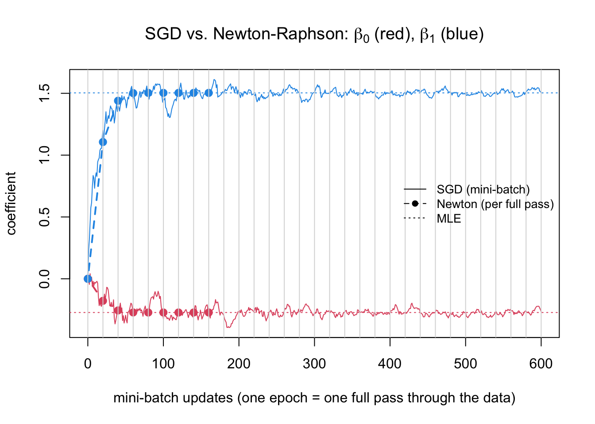
Newton needs only a handful of full-data passes to converge on this small problem (\(n = 200\), \(p = 2\)); SGD makes many cheap updates and lands near the MLE with residual noise from its stochastic gradient. Per data pass, Newton is far more efficient here — its advantage narrows, and eventually reverses, only once a full gradient, or the \(O(p^3)\) Hessian solve, becomes too expensive to compute at every iteration, which is exactly the regime where SGD earns its keep.
The chapter has covered a lot of ground, from bisection on a scalar score to stochastic gradient descent on millions of parameters. The three tables below collect it into a single reference: which method needs what, which R function to reach for, and how to choose among them for a given problem.
| Method | Derivatives | Storage | Cost per iteration | Local rate | Robust start | Hessian for SEs |
|---|---|---|---|---|---|---|
| Nelder–Mead | none | \(O(p^2)\) | \(O(p)\) evaluations | sublinear | good | no |
| Steepest descent | gradient | \(O(p)\) | 1 gradient + line search | linear (slow) | good | no |
| Conjugate gradient | gradient | \(O(p)\) | 1 gradient + line search | linear (fast) | moderate | no |
| BFGS | gradient | \(O(p^2)\) | 1 gradient + \(O(p^2)\) | superlinear | moderate | approximate |
| L-BFGS | gradient | \(O(mp)\) | 1 gradient + \(O(mp)\) | superlinear | moderate | no |
| Newton–Raphson | gradient, Hessian | \(O(p^2)\) | 1 Hessian + \(O(p^3)\) | quadratic | poor | exact |
| Fisher scoring / IRLS | score, expected information | \(O(p^2)\) | 1 weighted LS fit | near-quadratic | fair | exact |
| Stochastic gradient | minibatch gradient | \(O(p)\) | \(O(\text{batch})\) | sublinear | good | no |
| Function | Package | Methods available | Notes |
|---|---|---|---|
optim |
stats | Nelder–Mead, BFGS, CG, L-BFGS-B, SANN | General workhorse; supply gr or the gradient is differenced; hessian = TRUE for inference; L-BFGS-B allows box constraints |
nlm |
stats | Newton-type with ridging | Uses analytic gradient/Hessian if attached as attributes, otherwise numerical; returns $hessian |
nlminb |
stats | Trust-region (PORT) | Reliable on badly scaled problems; supports box constraints |
optimize, uniroot |
stats | Golden section, Brent | One dimension only |
glm |
stats | IRLS (Fisher scoring) | The specialised case; use start when separation is suspected |
nls |
stats | Gauss–Newton, Golub–Pereyra | Nonlinear least squares; port algorithm adds constraints |
optimx |
optimx | Unified front end to a dozen optimizers | Useful for comparing methods on the same objective |
nloptr |
nloptr | Large NLopt collection, with constraints | Global and derivative-free options |
Rsolnp, alabama |
— | Nonlinear equality and inequality constraints | For genuinely constrained problems |
| Situation | Suggested approach |
|---|---|
| Hessian derivable, \(p\) small, standard errors wanted | Newton–Raphson or Fisher scoring |
| GLM or a model expressible as one | glm (IRLS) |
| Gradient available, \(p\) moderate | BFGS via optim(method = "BFGS") |
| Gradient available, \(p\) large | L-BFGS |
| Derivatives unavailable, \(p < 10\) | Nelder–Mead as a first pass, then refine |
| Objective noisy or non-smooth | Nelder–Mead or simulated annealing |
| Divergence or poor conditioning suspected | nlm or nlminb; rescale the parameters |
| Objective a sum over very many observations | Stochastic gradient descent and variants |
| Multiple local maxima suspected | Multiple random starts with any of the above |
The last row deserves emphasis. Every method in this chapter is a local method: each converges to a stationary point near where it started, and none can certify that the point found is the global maximum. Restarting from a dispersed set of initial values and comparing the attained log-likelihoods is the only general safeguard, and it should be routine for any likelihood that is not known to be concave.